CHAPTER 08 / 中英对照
目录式缓存一致性协议
Directory Coherence Protocols
本章目录
8.1 目录协议简介8.2 基准目录系统8.3 增加独占态8.4 增加拥有态8.5 目录状态的表示8.6 目录组织8.7 性能与可扩展性优化8.8 案例研究8.9 讨论与目录协议的未来8.10 参考文献原书第 151 页PDF 173
ENGLISHIn this chapter, we present directory coherence protocols. Directory protocols were originally developed to address the lack of scalability of snooping protocols. Traditional snooping systems broadcast all requests on a totally ordered interconnection network and all requests are snooped by all coherence controllers. By contrast, directory protocols use a level of indirection to avoid both the ordered broadcast network and having each cache controller process every request.
中文本章介绍目录式缓存一致性协议。目录协议最初是为解决监听协议可扩展性不足的问题而提出的。传统监听系统通过具有全序关系的互连网络广播所有请求，所有缓存一致性控制器都要监听每个请求。相比之下，目录协议引入一层间接访问，既不再需要有序广播网络，也不再要求每个缓存控制器处理所有请求。
ENGLISHWe first introduce directory protocols at a high level (Section 8.1). We then present a system with a complete but unsophisticated three-state (MSI) directory protocol (Section 8.2). This system and protocol serve as a baseline upon which we later add system features and protocol optimizations. We then explain how to add the Exclusive state (Section 8.3) and the Owned state (Section 8.4) to the baseline MSI protocol. Next we discuss how to represent the directory state (Section 8.5) and how to design and implement the directory itself (Section 8.6). We then describe techniques for improving performance and reducing the implementation costs (Section 8.7). We then discuss commercial systems with directory protocols (Section 8.8) before concluding the chapter with a discussion of directory protocols and their future (Section 8.9).
中文我们首先从高层介绍目录协议（8.1 节），随后给出一个采用完整但较为简单的三状态（MSI）目录协议的系统（8.2 节）。这个系统及其协议构成基准方案，后续的系统特性和协议优化将在此基础上逐步引入。接着，我们说明如何为基准 MSI 协议增加独占态（8.3 节）和拥有态（8.4 节），然后讨论目录状态的表示方法（8.5 节），以及目录本身的设计与实现（8.6 节）。之后介绍提升性能、降低实现成本的技术（8.7 节），再讨论采用目录协议的商用系统（8.8 节），最后对目录协议及其未来发展作出讨论（8.9 节）。
ENGLISHThose readers who are content to learn just the basics of directory coherence protocols can skim or skip Section 8.3 through Section 8.7, although some of the material in these sections will help the reader to better understand the case studies in Section 8.8.
中文只希望了解目录式缓存一致性协议基础知识的读者，可以略读或跳过 8.3 至 8.7 节。不过，这几节中的部分内容有助于更好地理解 8.8 节的案例研究。
ENGLISH8.1 INTRODUCTION TO DIRECTORY PROTOCOLS
中文8.1 目录协议简介
ENGLISHThe key innovation of directory protocols is to establish a directory that maintains a global view of the coherence state of each block. The directory tracks which caches hold each block and in what states. A cache controller that wants to issue a coherence request (e.g., a GetS) sends it directly to the directory (i.e., a unicast message), and the directory looks up the state of the block to determine what actions to take next. For example, the directory state might indicate that the requested block is owned by core C2’s cache and thus the request should be forwarded to C2 (e.g., using a new Fwd-GetS request) to obtain a copy of the block. When C2’s cache controller receives this forwarded request, it unicasts a response to the requesting cache controller.
中文目录协议的关键创新在于建立一个目录，维护每个缓存块的一致性状态的全局视图。目录跟踪哪些缓存持有各个块，以及这些块处于什么状态。当缓存控制器需要发出缓存一致性请求（例如 GetS）时，会直接将请求发送给目录（即采用单播消息），目录查询该块的状态后，决定下一步采取什么操作。例如，目录状态可能表明所请求的块由核 C2 的缓存拥有，因此应把请求转发给 C2（例如使用一个新的 Fwd-GetS 请求），从而取得该块的副本。C2 的缓存控制器收到转发请求后，再向请求方的缓存控制器单播响应。
ENGLISHIt is instructive to compare the basic operation of directory protocols and snooping protocols. In a directory protocol, the directory maintains the state of each block, and cache controllers send all requests to the directory. The directory either responds to the request or forwards the request to one or more other coherence controllers that then respond. Coherence transactions typically involve either two steps (a unicast request, followed by a unicast response) or three
中文比较目录协议与监听协议的基本运行方式很有帮助。在目录协议中，目录维护每个块的状态，缓存控制器将所有请求发送给目录。目录可以直接响应请求，也可以将请求转发给一个或多个其他缓存一致性控制器，由后者响应。缓存一致性事务通常包含两步（一次单播请求，随后一次单播响应），或者三步：
查看 原书第 151 页 的完整原版面（PDF 173）
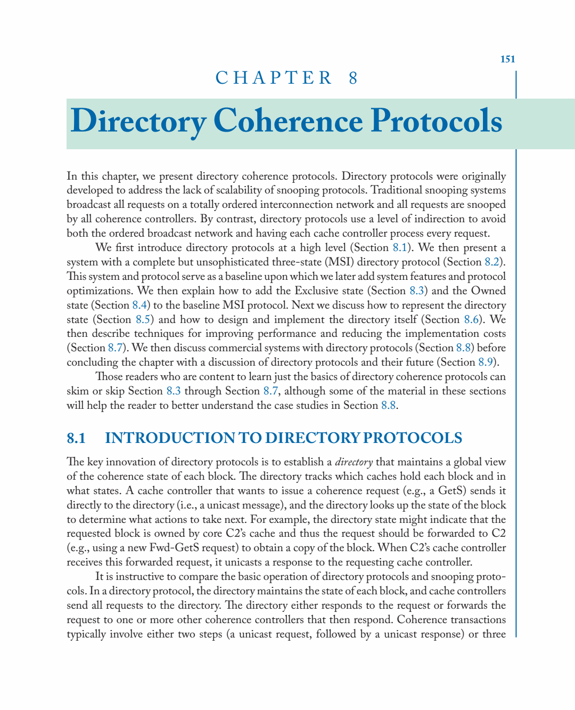
原书第 152 页PDF 174
ENGLISHsteps (a unicast request, K 1 forwarded requests, and K responses, where K is the number of (cid:21) sharers). Some protocols even have a fourth step, either because responses indirect through the directory or because the requestor notifies the directory on transaction completion. In contrast, snooping protocols distribute a block’s state across potentially all of the coherence controllers. Because there is no central summary of this distributed state, coherence requests must be broadcast to all coherence controllers. Snooping coherence transactions thus always involve two steps (a broadcast request, followed by a unicast response).

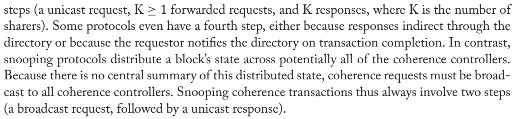
数学符号与上下标以此原版面为准中文（一次单播请求、K 次转发请求以及 K 次响应，其中 K ≥ 1，K 为共享者数量）。有些协议甚至需要第四步：要么响应需经由目录间接转发，要么请求方需要在事务完成时通知目录。相比之下，监听协议将一个块的状态分散在可能涉及的所有缓存一致性控制器中。由于没有对这些分布状态进行集中汇总，缓存一致性请求必须广播给所有控制器。因此，监听式缓存一致性事务总是包含两步：一次广播请求，随后一次单播响应。
ENGLISHLike snooping protocols, a directory protocol needs to define when and how coherence transactions become ordered with respect to other transactions. In most directory protocols, a coherence transaction is ordered at the directory. Multiple coherence controllers may send coherence requests to the directory at the same time, and the transaction order is determined by the order in which the requests are serialized at the directory. If two requests race to the directory, the interconnection network effectively chooses which request the directory will process first. The fate of the request that arrives second is a function of the directory protocol and what types of requests are racing. The second request might get (a) processed immediately after the first request, (b) held at the directory while awaiting the first request to complete, or (c) negatively acknowledged (NACKed). In the latter case, the directory sends a negative acknowledgment message (NACK) to the requestor, and the requestor must re-issue its request. In this chapter, we do not consider protocols that use NACKs, but we do discuss the possible use of NACKs and how they can cause livelock problems in Section 9.3.2.
中文与监听协议一样，目录协议也必须定义缓存一致性事务何时、以何种方式相对于其他事务确定顺序。在大多数目录协议中，事务在目录处确定顺序。多个缓存一致性控制器可能同时向目录发送请求，事务顺序由这些请求在目录处串行化的顺序决定。如果两个请求竞相到达目录，实际上是互连网络决定目录先处理哪一个。第二个到达的请求如何处理，取决于目录协议以及相互竞争的请求类型：它可能（a）紧接着第一个请求得到处理，（b）暂存在目录中，等待第一个请求完成，或者（c）被否定确认（NACK）。在最后一种情况下，目录向请求方发送否定确认消息 NACK，请求方必须重新发出请求。本章不讨论采用 NACK 的协议，但会在 9.3.2 节讨论 NACK 的可能用途，以及它为何可能引发活锁。
ENGLISHUsing the directory as the ordering point represents another key difference between directory protocols and snooping protocols. Traditional snooping protocols create a total order by serializing all transactions on the ordered broadcast network. Snooping’s total order not only ensures that each block’s requests are processed in per-block order but also facilitates implementing a memory consistency model. Recall that traditional snooping protocols use totally ordered broadcast to serialize all requests; thus, when a requestor observes its own coherence request this serves as notification that its coherence epoch may begin. In particular, when a snooping controller sees its own GetM request, it can infer that other caches will invalidate their S blocks. We demonstrated in Table 7.4 that this serialization notification is sufficient to support the strong SC and TSO memory consistency models.
中文将目录作为定序点，是目录协议与监听协议的另一项关键区别。传统监听协议在有序广播网络上将所有事务串行化，从而建立全序关系。这种全序不仅保证每个块的请求按照该块的顺序得到处理，也有利于实现内存一致性模型。回忆一下，传统监听协议利用全序广播将所有请求串行化；因此，当请求方观察到自己的缓存一致性请求时，就等于收到了可以开始其缓存一致性时期（epoch）的通知。特别是，当监听控制器看到自己的 GetM 请求时，它就能推断其他缓存会使其 S 态块无效。表 7.4 已说明，这种串行化通知足以支持 SC 和 TSO 这类强内存一致性模型。
ENGLISHIn contrast, a directory protocol orders transactions at the directory to ensure that conflicting requests are processed by all nodes in per-block order. However, the lack of a total order means that a requestor in a directory protocol needs another strategy to determine when its request has been serialized and thus when its coherence epoch may safely begin. Because (most) directory protocols do not use totally ordered broadcast, there is no global notion of serialization. Rather, a request must be individually serialized with respect to all the caches that (may) have a copy of the block. Explicit messages are needed to notify the requestor that its request has been serialized by each relevant cache. In particular, on a GetM request, each cache controller with a
中文相比之下，目录协议在目录处对事务定序，以确保所有节点都按每个块各自的顺序处理相互冲突的请求。不过，由于没有全序关系，请求方需要采用另一种策略，判断自己的请求何时已完成串行化，从而确定何时可以安全地开始其缓存一致性时期。由于大多数目录协议不使用全序广播，系统并不存在全局统一的串行化时刻。请求必须相对于每个持有或可能持有该块副本的缓存分别完成串行化，并通过显式消息通知请求方：各个相关缓存已经将其请求串行化。特别是，对于 GetM 请求，每个持有
查看 原书第 152 页 的完整原版面（PDF 174）
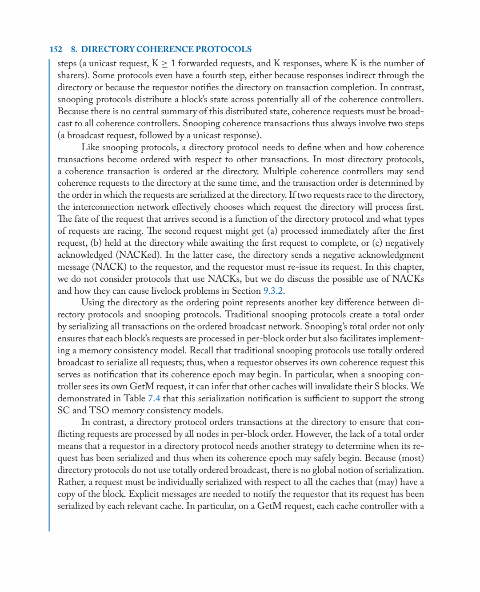
原书第 153 页PDF 175
ENGLISHshared (S) copy must send an explicit acknowledgment (Ack) message once it has serialized the invalidation message.
中文共享（S）副本的缓存控制器，在将无效化消息串行化之后，都必须发送一条显式确认（Ack）消息。
ENGLISHThis comparison between directory and snooping protocols highlights the fundamental trade-off between them. A directory protocol achieves greater scalability (i.e., because it requires less bandwidth) at the cost of a level of indirection (i.e., having three steps, instead of two steps, for some transactions). This additional level of indirection increases the latency of some coherence transactions.
中文目录协议与监听协议的上述比较揭示了二者的根本权衡。目录协议以增加一层间接访问为代价，获得更好的可扩展性：所需带宽更低，但部分事务需要三步而非两步。这额外的一层间接访问会增大某些缓存一致性事务的延迟。
ENGLISH8.2 BASELINE DIRECTORY SYSTEM
中文8.2 基准目录系统
ENGLISHIn this section, we present a baseline system with a straightforward, modestly optimized directory protocol. This system provides insight into the key features of directory protocols while revealing inefficiencies that motivate the features and optimizations presented in subsequent sections of this chapter.
中文本节给出一个基准系统，其目录协议较为直接，仅作了适度优化。通过该系统，可以理解目录协议的关键特征，同时看到其中的低效之处；这些不足也正是本章后续引入新特性与优化的动机。
ENGLISH8.2.1 DIRECTORY SYSTEM MODEL We illustrate our directory system model in Figure 8.1. Unlike for snooping protocols, the topology of the interconnection network is intentionally vague. It could be a mesh, torus, or any other topology that the architect wishes to use. One restriction on the interconnection network that we assume in this chapter is that it enforces point-to-point ordering. That is, if controller A sends two messages to controller B, then the messages arrive at controller B in the same order in which they were sent.1 Having point-to-point ordering reduces the complexity of the protocol, and we defer a discussion of networks without ordering until Section 8.7.3.
中文8.2.1 目录系统模型
图 8.1 给出了目录系统模型。与监听协议不同，这里有意不指定互连网络的具体拓扑：它可以是网格、环面，也可以是体系结构设计者希望采用的其他拓扑。本章对互连网络作出的一项限制是保证点对点有序。也就是说，如果控制器 A 向控制器 B 发送两条消息，二者到达 B 的顺序必须与发送顺序相同。¹ 保证点对点有序可以降低协议复杂度；不保证有序的网络将在 8.7.3 节讨论。
图 8.1 给出了目录系统模型。与监听协议不同，这里有意不指定互连网络的具体拓扑：它可以是网格、环面，也可以是体系结构设计者希望采用的其他拓扑。本章对互连网络作出的一项限制是保证点对点有序。也就是说，如果控制器 A 向控制器 B 发送两条消息，二者到达 B 的顺序必须与发送顺序相同。¹ 保证点对点有序可以降低协议复杂度；不保证有序的网络将在 8.7.3 节讨论。
ENGLISHThe only differences between this directory system model and the baseline system model in Figure 2.1 is that we have added a directory and we have renamed the memory controller to be the directory controller. There are many ways of sizing and organizing the directory, and for now we assume the simplest model: for each block in memory, there is a corresponding directory entry. In Section 8.6, we examine and compare more practical directory organization options. We also assume a monolithic LLC with a single directory controller; in Section 8.7.1, we explain how to distribute this functionality across multiple banks of an LLC and multiple directory controllers.
中文与图 2.1 的基准系统模型相比，这个目录系统模型的区别仅在于增加了目录，并将内存控制器改称为目录控制器。目录的容量与组织方式有多种选择，这里暂时采用最简单的模型：内存中的每一个块都有一个对应的目录项。8.6 节将研究并比较更实用的目录组织方案。我们还假定末级缓存（LLC）是一个整体，由单个目录控制器管理；8.7.1 节将说明如何把这些功能分散到 LLC 的多个存储体和多个目录控制器上。
ENGLISH8.2.2 HIGH-LEVEL PROTOCOL SPECIFICATION The baseline directory protocol has only three stable states: MSI. A block is owned by the directory controller unless the block is in a cache in state M. The directory state for each block includes the stable coherence state, the identity of the owner (if the block is in state M), and the
中文8.2.2 高层协议规约
基准目录协议只有 MSI 三种稳定态。除非某个缓存以 M 态持有该块，否则该块由目录控制器拥有。每个块的目录状态包括稳定的一致性状态、所有者标识（块处于 M 态时），以及
基准目录协议只有 MSI 三种稳定态。除非某个缓存以 M 态持有该块，否则该块由目录控制器拥有。每个块的目录状态包括稳定的一致性状态、所有者标识（块处于 M 态时），以及
ENGLISH1Strictly speaking, we require point-to-point order for only certain types of messages, but this is a detail that we defer until Section 8.7.3.
中文¹ 严格地说，仅对某些类型的消息要求点对点有序；这一细节留到 8.7.3 节讨论。
查看 原书第 153 页 的完整原版面（PDF 175）
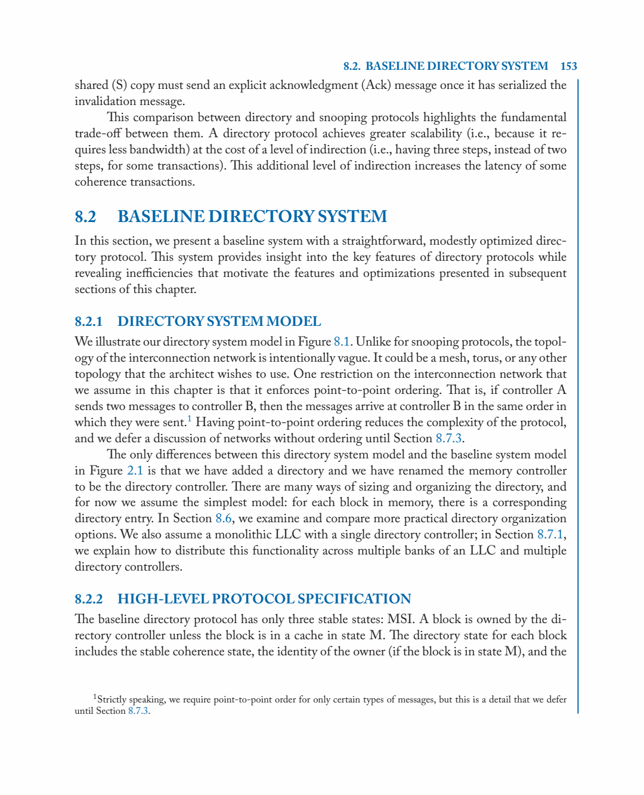
原书第 154 页PDF 176
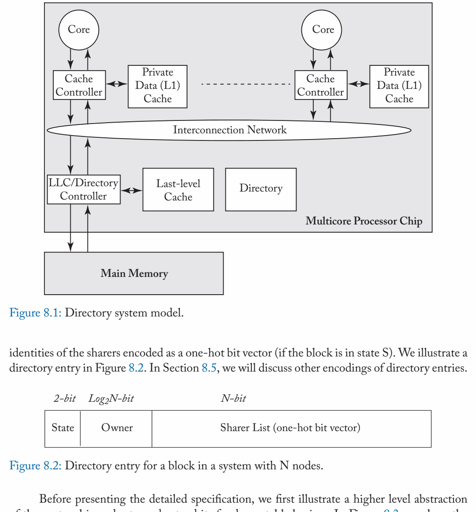
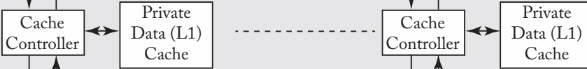
展开可搜索的英文文字
Private Private Cache Cache Data (L1) Data (L1) Controller Controller Cache Cache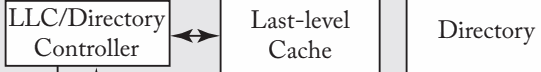
展开可搜索的英文文字
LLC/Directory Last-level Directory Controller CacheENGLISHidentities of the sharers encoded as a one-hot bit vector (if the block is in state S). We illustrate a directory entry in Figure 8.2. In Section 8.5, we will discuss other encodings of directory entries.
中文以独热位向量编码的共享者标识（块处于 S 态时）。图 8.2 展示了一个目录项。8.5 节将讨论目录项的其他编码方式。
ENGLISHBefore presenting the detailed specification, we first illustrate a higher level abstraction of the protocol in order to understand its fundamental behaviors. In Figure 8.3, we show the transactions in which a cache controller issues coherence requests to change permissions from I to S, I or S to M, M to I, and S to I. As with the snooping protocols in the last chapter, we specify the directory state of a block using a cache-centric notation (e.g., a directory state of M denotes that there exists a cache with the block in state M). Note that a cache controller may not silently evict a Shared block; that is, there is an explicit PutS request. We defer a discussion
中文在给出详细规约之前，我们先用较高层次的协议抽象来理解其基本行为。图 8.3 展示了缓存控制器发出缓存一致性请求、使权限从 I 变为 S、从 I 或 S 变为 M、从 M 变为 I，以及从 S 变为 I 的事务。与上一章的监听协议一样，我们采用以缓存为中心的记法来表示块的目录状态，例如，目录状态 M 表示存在某个缓存以 M 态持有该块。请注意，缓存控制器不能静默地替换一个 Shared 块；也就是说，需要显式发送 PutS 请求。对于允许静默替换共享块的协议，以及静默方式与显式 PutS 请求的比较，
查看 原书第 154 页 的完整原版面（PDF 176）
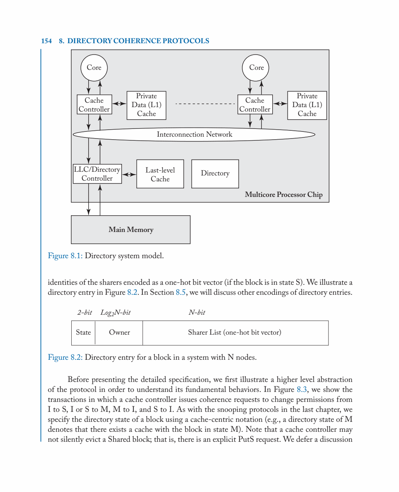
原书第 155 页PDF 177
ENGLISHof protocols with silent evictions of shared blocks, as well as a comparison of silent vs. explicit PutS requests, until Section 8.7.4.
中文我们留到 8.7.4 节讨论。
ENGLISHMost of the transactions are fairly straightforward, but two transactions merit further discussion here. The first is the transaction that occurs when a cache is trying to upgrade permissions from I or S to M and the directory state is S. The cache controller sends a GetM to the directory, and the directory takes two actions. First, it responds to the requestor with a message that includes the data and the “AckCount;” the AckCount is the number of current sharers of the block. The directory sends the AckCount to the requestor to inform the requestor of how many sharers must acknowledge having invalidated their block in response to the GetM. Second, the directory sends an Invalidation (Inv) message to all of the current sharers. Each sharer, upon receiving the Invalidation, sends an Invalidation-Ack (Inv-Ack) to the requestor. Once the requestor receives the message from the directory and all of the Inv-Ack messages, it completes the transaction. The requestor, having received all of the Inv-Ack messages, knows that there are no longer any readers of the block and thus it may write to the block without violating coherence.
中文大多数事务都比较直接，但有两个值得进一步说明。第一个发生在缓存试图把权限从 I 或 S 升级到 M，而目录状态为 S 时。缓存控制器向目录发送 GetM，目录随后执行两项操作。首先，向请求方回复一条包含数据和 AckCount 的消息；AckCount 是该块当前的共享者数量。目录把 AckCount 发送给请求方，使其知道有多少个共享者必须确认自己已响应 GetM，将各自的块无效化。其次，目录向所有当前共享者发送无效化（Inv）消息。每个共享者收到该消息后，向请求方发送无效化确认（Inv-Ack）。请求方收到目录的消息以及全部 Inv-Ack 后，事务即告完成。由于已收到所有 Inv-Ack，请求方知道此时不再有该块的读者，因此可以写入该块而不违反缓存一致性。
ENGLISHThe second transaction that merits further discussion occurs when a cache is trying to evict a block in state M. In this protocol, we have the cache controller send a PutM message that includes the data to the directory. The directory responds with a Put-Ack. If the PutM did not carry the data with it, then the protocol would require a third message—a data message from the cache controller to the directory with the evicted block that had been in state M—to be sent in a PutM transaction. The PutM transaction in this directory protocol differs from what occurred in the snooping protocol, in which a PutM did not carry data.
中文第二个值得进一步讨论的事务发生在缓存试图替换一个 M 态块时。在本协议中，缓存控制器向目录发送携带数据的 PutM 消息，目录则返回 Put-Ack。如果 PutM 不携带数据，那么该事务就需要第三条消息：缓存控制器还必须向目录发送数据消息，传送被替换的原 M 态块。本目录协议中的 PutM 事务与前面的监听协议不同，后者的 PutM 不携带数据。
ENGLISH8.2.3 AVOIDING DEADLOCK In this protocol, the reception of a message can cause a coherence controller to send another message. In general, if event A (e.g., message reception) can cause event B (e.g., message sending) and both these events require resource allocation (e.g., network links and buffers), then we must be careful to avoid deadlock that could occur if circular resource dependences arise. For example, a GetS request can cause the directory controller to issue a Fwd-GetS message; if these messages use the same resources (e.g., network links and buffers), then the system can potentially deadlock. In Figure 8.4, we illustrate a deadlock in which two coherence controllers C1 and C2 are responding to each other’s requests, but the incoming queues are already full of other coherence requests. If the queues are FIFO, then the responses cannot pass the requests. Because the queues are full, each controller stalls trying to send a response. Because the queues are FIFO, the controller cannot switch to work on a subsequent request (or get to the response). Thus, the system deadlocks.
中文8.2.3 避免死锁
在本协议中，接收一条消息可能导致缓存一致性控制器发送另一条消息。一般而言，如果事件 A（例如接收消息）可能引发事件 B（例如发送消息），且两者都需要分配资源（例如网络链路和缓冲区），就必须谨慎避免循环资源依赖所导致的死锁。例如，GetS 请求可能使目录控制器发出 Fwd-GetS 消息；如果这两类消息使用相同资源（例如网络链路和缓冲区），系统就可能死锁。图 8.4 给出了一个例子：两个缓存一致性控制器 C1、C2 正在响应彼此的请求，但它们的输入队列已被其他缓存一致性请求占满。如果队列采用 FIFO，响应就无法越过请求。由于队列已满，每个控制器都停顿在发送响应的操作上；又由于队列采用 FIFO，控制器也无法转而处理后续请求，或取出响应。于是系统发生死锁。
在本协议中，接收一条消息可能导致缓存一致性控制器发送另一条消息。一般而言，如果事件 A（例如接收消息）可能引发事件 B（例如发送消息），且两者都需要分配资源（例如网络链路和缓冲区），就必须谨慎避免循环资源依赖所导致的死锁。例如，GetS 请求可能使目录控制器发出 Fwd-GetS 消息；如果这两类消息使用相同资源（例如网络链路和缓冲区），系统就可能死锁。图 8.4 给出了一个例子：两个缓存一致性控制器 C1、C2 正在响应彼此的请求，但它们的输入队列已被其他缓存一致性请求占满。如果队列采用 FIFO，响应就无法越过请求。由于队列已满，每个控制器都停顿在发送响应的操作上；又由于队列采用 FIFO，控制器也无法转而处理后续请求，或取出响应。于是系统发生死锁。
ENGLISHA well-known solution for avoiding deadlock in coherence protocols is to use separate networks for each class of message. The networks can be physically separate or logically separate (called virtual networks), but the key is avoiding dependences between classes of messages.
中文避免缓存一致性协议死锁的一种常见方案，是为各类消息使用独立网络。网络可以在物理上分离，也可以在逻辑上分离，后者称为虚拟网络；关键在于消除不同消息类别之间的资源依赖。
查看 原书第 155 页 的完整原版面（PDF 177）
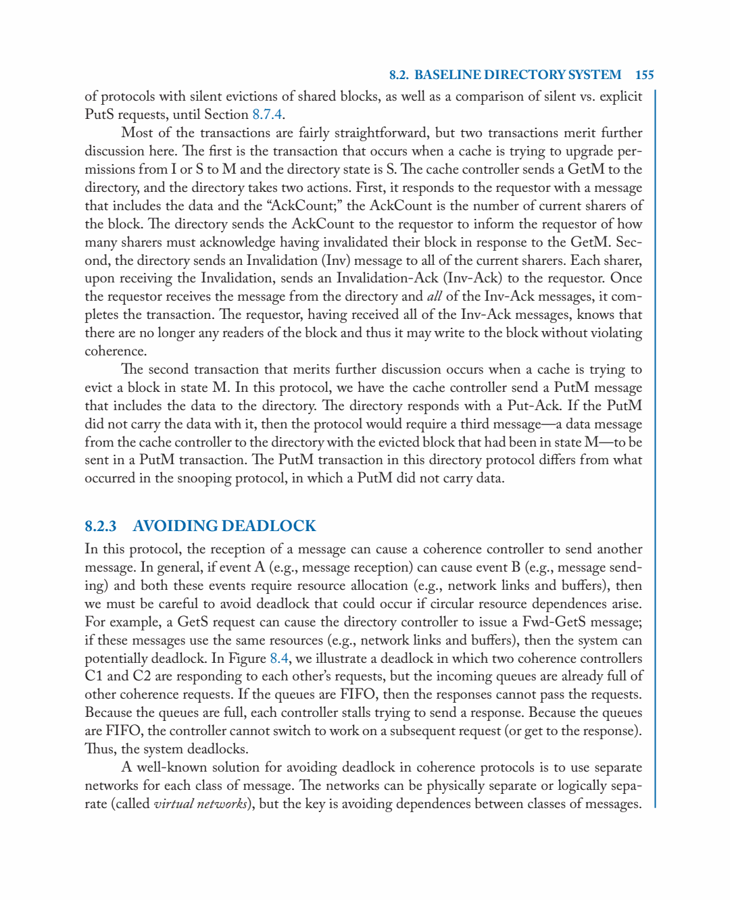
原书第 156 页PDF 178
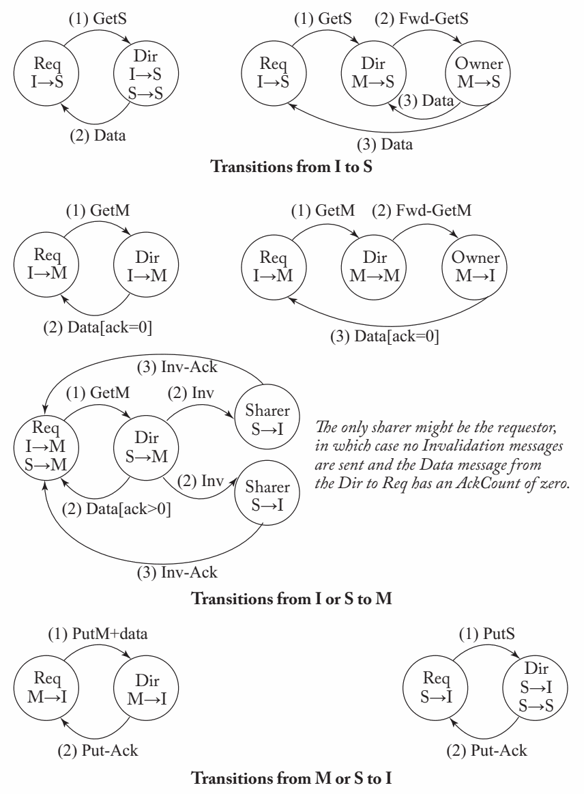
展开可搜索的英文文字
(1) GetS (1) GetS (2) Fwd-GetS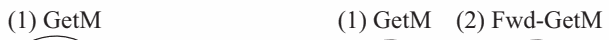
展开可搜索的英文文字
(1) GetM (1) GetM (2) Fwd-GetM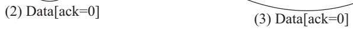
展开可搜索的英文文字
(2) Data[ack=0] (3) Data[ack=0]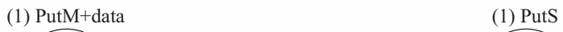
展开可搜索的英文文字
(1) PutM+data (1) PutS查看 原书第 156 页 的完整原版面（PDF 178）
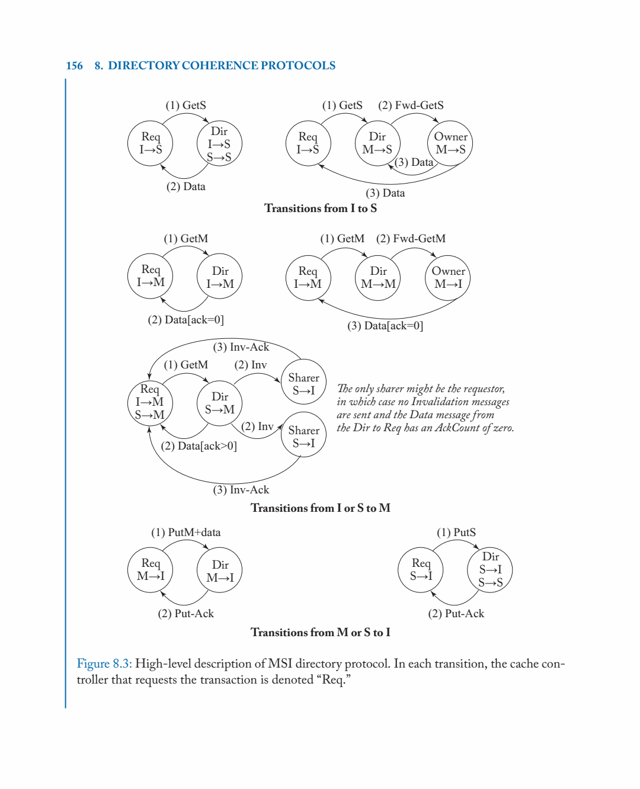
原书第 157 页PDF 179
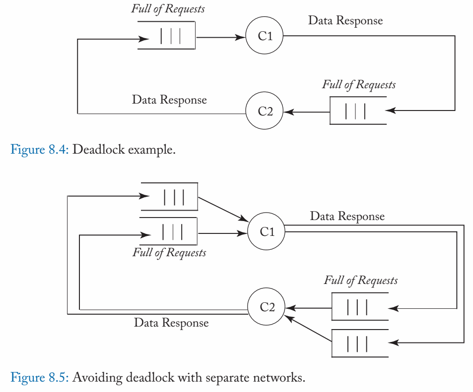
ENGLISHFigure 8.5 illustrates a system in which request and response messages travel on separate phys-
中文图 8.5 展示了请求消息和响应消息通过彼此独立的物理网络传送的系统。
ENGLISHical networks. Because a response cannot be blocked by another request, it will eventually be consumed by its destination node, breaking the cyclic dependence.
中文由于响应不会被其他请求阻塞，它最终能够被目的节点接收并处理，从而打破循环依赖。
ENGLISHThe directory protocol in this section uses three networks to avoid deadlock. Because a request can cause a forwarded request and a forwarded request can cause a response, there are three message classes that each require their own network. Request messages are GetS, GetM, and PutM. Forwarded request messages are Fwd-GetS, Fwd-GetM, Inv(alidation), and Put- Ack. Response messages are Data and Inv-Ack. The protocols in this chapter require that the Forwarded Request network provides point-to-point ordering; other networks have no ordering constraints nor are there any ordering constraints between messages traveling on different networks.
中文本节的目录协议采用三个网络避免死锁。因为请求可能引发转发请求，而转发请求又可能引发响应，所以有三类消息各自需要独立网络。请求类消息为 GetS、GetM 和 PutM；转发请求类消息为 Fwd-GetS、Fwd-GetM、Inv（无效化）和 Put-Ack；响应类消息为 Data 和 Inv-Ack。本章的协议要求转发请求网络保证点对点有序；其他网络没有顺序约束，不同网络上传输的消息之间也没有顺序约束。
ENGLISHWe defer a more thorough discussion of deadlock avoidance, including more explanation of virtual networks and the exact requirements for avoiding deadlock, until Section 9.3.
中文关于死锁避免的更全面讨论，包括虚拟网络的进一步解释以及避免死锁的确切要求，将留到 9.3 节。
查看 原书第 157 页 的完整原版面（PDF 179）
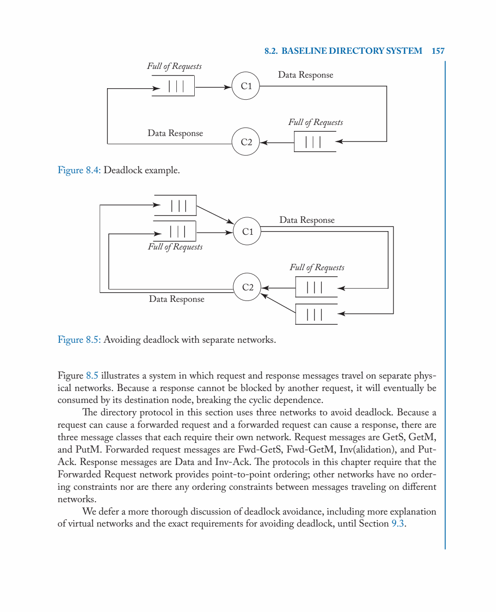
原书第 158 页PDF 180
ENGLISH8.2.4 DETAILED PROTOCOL SPECIFICATION We present the detailed protocol specification, including all transient states, in Tables 8.1 and 8.2. Compared to the high-level description in Section 8.2.2, the most significant difference is the transient states. The coherence controllers must manage the states of blocks that are in the midst of coherence transactions, including situations in which a cache controller receives a forwarded request from another controller in between sending its coherence request to the directory and receiving all of its necessary response messages, including Data and possible Inv-Acks. The cache controllers can maintain this state in the miss status handling registers (MSHRs) that cores use to keep track of outstanding coherence requests. Notationally, we represent these transient states in the form XYAD, where the superscript A denotes waiting for acknowledgments and the superscript D denotes waiting for data. (This notation differs from the snooping protocols, in which the superscript A denoted waiting for a request to appear on the bus.)
中文8.2.4 详细协议规约
表 8.1、8.2 给出了包含全部瞬态的详细协议规约。相较于 8.2.2 节的高层描述，最显著的区别是增加了瞬态。缓存一致性控制器必须管理处于事务执行过程中的缓存块状态，包括这样一种情况：缓存控制器向目录发出请求后，在收到所有必需的响应消息（Data，以及可能需要的 Inv-Ack）之前，先收到了来自另一控制器的转发请求。缓存控制器可以使用不命中状态处理寄存器（MSHR）保存这些状态；处理器核也正是利用 MSHR 跟踪尚未完成的缓存一致性请求。记号上，我们将这些瞬态表示为 XYᴬᴰ，其中上标 A 表示等待确认，上标 D 表示等待数据。请注意，这与监听协议的记法不同；在那里，上标 A 表示等待请求出现在总线上。
表 8.1、8.2 给出了包含全部瞬态的详细协议规约。相较于 8.2.2 节的高层描述，最显著的区别是增加了瞬态。缓存一致性控制器必须管理处于事务执行过程中的缓存块状态，包括这样一种情况：缓存控制器向目录发出请求后，在收到所有必需的响应消息（Data，以及可能需要的 Inv-Ack）之前，先收到了来自另一控制器的转发请求。缓存控制器可以使用不命中状态处理寄存器（MSHR）保存这些状态；处理器核也正是利用 MSHR 跟踪尚未完成的缓存一致性请求。记号上，我们将这些瞬态表示为 XYᴬᴰ，其中上标 A 表示等待确认，上标 D 表示等待数据。请注意，这与监听协议的记法不同；在那里，上标 A 表示等待请求出现在总线上。
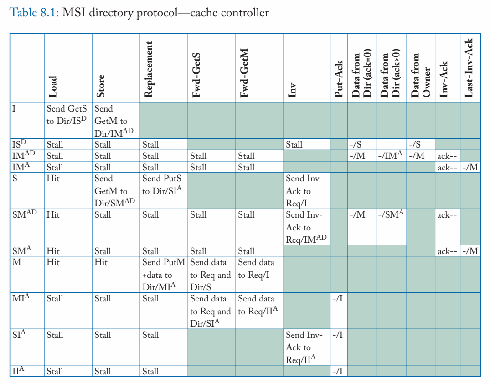
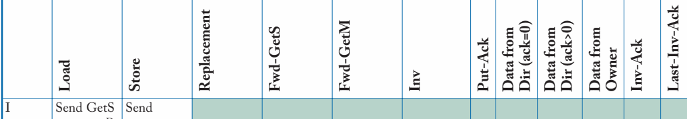
展开可搜索的英文文字
daoL erotS tnemecalpeR SteG-dwF MteG-dwF vnI kcA-tuP morf ataD )0=kca( riD morf ataD )0>kca( riD morf ataD renwO kcA-vnI kcA-vnI-tsaL I Send GetS Send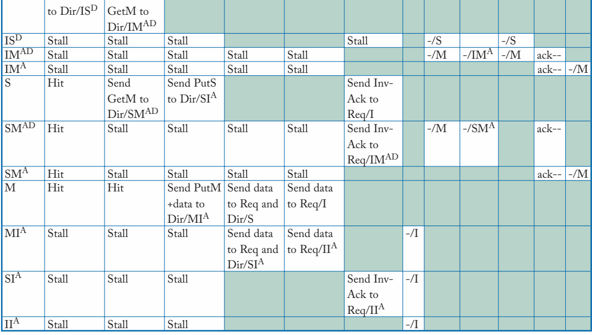
展开可搜索的英文文字
to Dir/ISD GetM to Dir/IMAD ISD Stall Stall Stall Stall -/S -/S IMAD Stall Stall Stall Stall Stall -/M -/IMA -/M ack-- IMA Stall Stall Stall Stall Stall ack-- -/M S Hit Send Send PutS Send Inv- GetM to to Dir/SIA Ack to Dir/SMAD Req/I SMAD Hit Stall Stall Stall Stall Send Inv- -/M -/SMA ack-- Ack to Req/IMAD SMA Hit Stall Stall Stall Stall ack-- -/M M Hit Hit Send PutM Send data Send data +data to to Req and to Req/I Dir/MIA Dir/S MIA Stall Stall Stall Send data Send data -/I to Req and to Req/IIA Dir/SIA SIA Stall Stall Stall Send Inv- -/I Ack to Req/IIA IIA Stall Stall Stall -/I查看 原书第 158 页 的完整原版面（PDF 180）
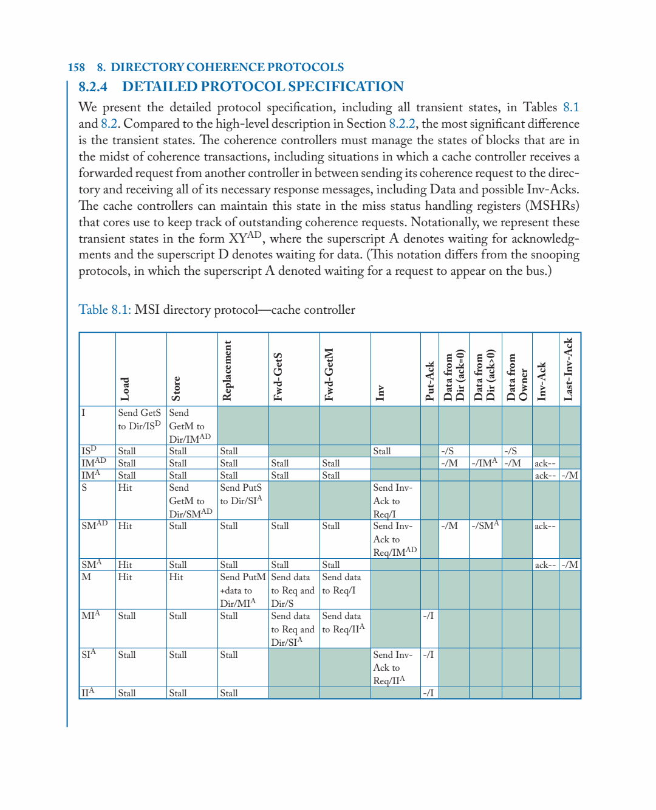
原书第 159 页PDF 181
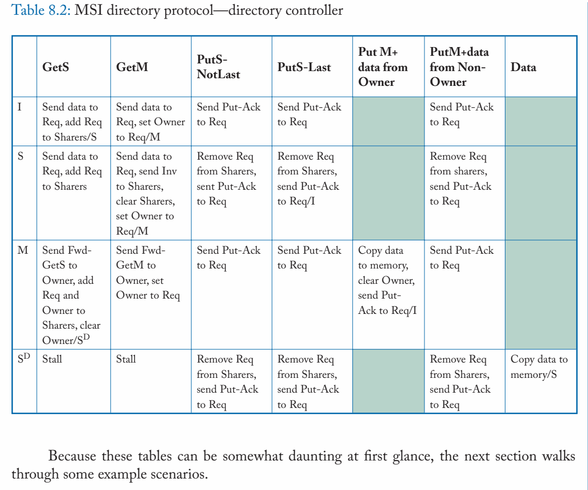
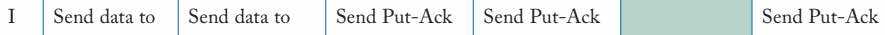
展开可搜索的英文文字
I Send data to Send data to Send Put-Ack Send Put-Ack Send Put-Ack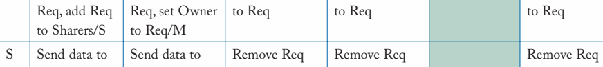
展开可搜索的英文文字
Req, add Req Req, set Owner to Req to Req to Req to Sharers/S to Req/M S Send data to Send data to Remove Req Remove Req Remove Req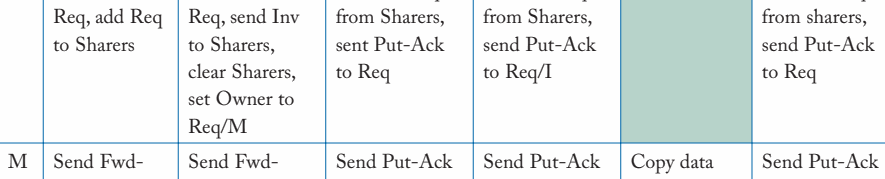
展开可搜索的英文文字
Req, add Req Req, send Inv from Sharers, from Sharers, from sharers, to Sharers to Sharers, sent Put-Ack send Put-Ack send Put-Ack clear Sharers, to Req to Req/I to Req set Owner to Req/M M Send Fwd- Send Fwd- Send Put-Ack Send Put-Ack Copy data Send Put-Ack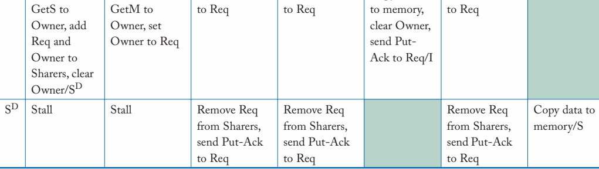
展开可搜索的英文文字
GetS to GetM to to Req to Req to memory, to Req Owner, add Owner, set clear Owner, Req and Owner to Req send Put- Owner to Ack to Req/I Sharers, clear Owner/SD SD Stall Stall Remove Req Remove Req Remove Req Copy data to from Sharers, from Sharers, from Sharers, memory/S send Put-Ack send Put-Ack send Put-Ack to Req to Req to ReqENGLISHBecause these tables can be somewhat daunting at first glance, the next section walks through some example scenarios.
中文这些表格乍看之下可能令人望而生畏，因此下一节将通过几个示例场景，逐步说明协议的运行过程。
ENGLISH8.2.5 PROTOCOL OPERATION The protocol enables caches to acquire blocks in states S and M and to replace blocks to the directory in either of these states.
中文8.2.5 协议运行过程
该协议允许缓存获得 S 态和 M 态的块，也允许缓存将这两种状态的块替换回目录。
该协议允许缓存获得 S 态和 M 态的块，也允许缓存将这两种状态的块替换回目录。
ENGLISHI to S (common case #1) The cache controller sends a GetS request to the directory and changes the block state from I to ISD. The directory receives this request and, if the directory is the owner (i.e., no cache currently has the block in M), the directory responds with a Data message, changes the block’s state to S (if it is not S already), and adds the requestor to the sharer list. When the Data arrives at the requestor, the cache controller changes the block’s state to S, completing the transaction.
中文I→S（常见情形 1）
缓存控制器向目录发送 GetS 请求，将块状态从 I 改为 ISᴰ。目录收到请求后，如果自身是所有者，也就是当前没有缓存以 M 态持有该块，就回复 Data 消息，将块状态改为 S（若尚不是 S），并将请求方加入共享者列表。Data 到达请求方后，缓存控制器将块状态改为 S，事务完成。
缓存控制器向目录发送 GetS 请求，将块状态从 I 改为 ISᴰ。目录收到请求后，如果自身是所有者，也就是当前没有缓存以 M 态持有该块，就回复 Data 消息，将块状态改为 S（若尚不是 S），并将请求方加入共享者列表。Data 到达请求方后，缓存控制器将块状态改为 S，事务完成。
查看 原书第 159 页 的完整原版面（PDF 181）
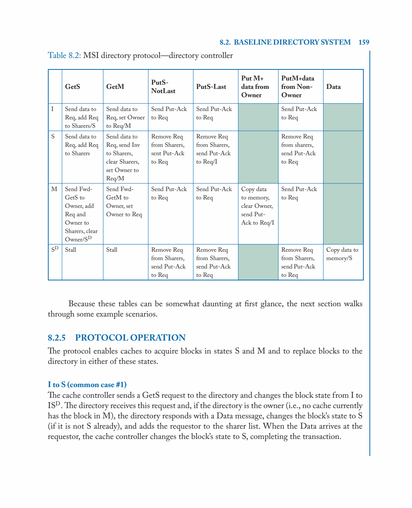
原书第 160 页PDF 182
ENGLISHI to S (common case #2) The cache controller sends a GetS request to the directory and changes the block state from I to ISD. If the directory is not the owner (i.e., there is a cache that currently has the block in M), the directory forwards the request to the owner and changes the block’s state to the transient state SD. The owner responds to this Fwd-GetS message by sending Data to the requestor and changing the block’s state to S. The now-previous owner must also send Data to the directory since it is relinquishing ownership to the directory, which must have an up-to-date copy of the block. When the Data arrives at the requestor, the cache controller changes the block state to S and considers the transaction complete. When the Data arrives at the directory, the directory copies it to memory, changes the block state to S, and considers the transaction complete.
中文I→S（常见情形 2）
缓存控制器向目录发送 GetS 请求，将块状态从 I 改为 ISᴰ。如果目录不是所有者，也就是当前有某个缓存以 M 态持有该块，目录便将请求转发给所有者，并把块状态改为瞬态 Sᴰ。所有者收到 Fwd-GetS 后，向请求方发送 Data，并将块状态改为 S。由于它正在将所有权交还目录，目录必须持有该块的最新副本，因此这个原所有者还必须向目录发送 Data。Data 到达请求方后，缓存控制器将块状态改为 S，并认为事务已经完成；Data 到达目录后，目录将其复制到内存，将块状态改为 S，也认为事务已经完成。
缓存控制器向目录发送 GetS 请求，将块状态从 I 改为 ISᴰ。如果目录不是所有者，也就是当前有某个缓存以 M 态持有该块，目录便将请求转发给所有者，并把块状态改为瞬态 Sᴰ。所有者收到 Fwd-GetS 后，向请求方发送 Data，并将块状态改为 S。由于它正在将所有权交还目录，目录必须持有该块的最新副本，因此这个原所有者还必须向目录发送 Data。Data 到达请求方后，缓存控制器将块状态改为 S，并认为事务已经完成；Data 到达目录后，目录将其复制到内存，将块状态改为 S，也认为事务已经完成。
ENGLISHI to S (race cases) The above two I-to-S scenarios represent the common cases, in which there is only one transaction for the block in progress. Most of the protocol’s complexity derives from having to deal with the less-common cases of multiple in-progress transactions for a block. For example, a reader may find it surprising that a cache controller can receive an Invalidation for a block in state ISD. Consider core C1 that issues a GetS and goes to ISD and another core C2 that issues a GetM for the same block that arrives at the directory after C1’s GetS. The directory first sends C1 Data in response to its GetS and then an Invalidation in response to C2’s GetM. Because the Data and Invalidation travel on separate networks, they can arrive out of order, and thus C1 can receive the Invalidation before the Data.
中文I→S（竞争情形）
上述两种 I→S 场景属于常见情形，即同一块在任一时刻只有一个事务正在执行。协议的大部分复杂性来自较少见的情形：同一块存在多个正在执行的事务。例如，缓存控制器竟然可能针对一个 ISᴰ 态块收到无效化消息，这或许会令读者意外。设核 C1 发出 GetS 并进入 ISᴰ，另一个核 C2 对同一块发出 GetM，且后者在 C1 的 GetS 之后到达目录。目录先向 C1 发送 Data 以响应其 GetS，然后又因 C2 的 GetM 向 C1 发送无效化消息。Data 和无效化消息经过不同网络，可能乱序到达，因此 C1 可能先收到无效化消息，后收到 Data。
上述两种 I→S 场景属于常见情形，即同一块在任一时刻只有一个事务正在执行。协议的大部分复杂性来自较少见的情形：同一块存在多个正在执行的事务。例如，缓存控制器竟然可能针对一个 ISᴰ 态块收到无效化消息，这或许会令读者意外。设核 C1 发出 GetS 并进入 ISᴰ，另一个核 C2 对同一块发出 GetM，且后者在 C1 的 GetS 之后到达目录。目录先向 C1 发送 Data 以响应其 GetS，然后又因 C2 的 GetM 向 C1 发送无效化消息。Data 和无效化消息经过不同网络，可能乱序到达，因此 C1 可能先收到无效化消息，后收到 Data。
ENGLISHI or S to M The cache controller sends a GetM request to the directory and changes the block’s state from I to IMAD. In this state, the cache waits for Data and (possibly) Inv-Acks that indicate that other caches have invalidated their copies of the block in state S. The cache controller knows how many Inv-Acks to expect, since the Data message contains the AckCount, which may be zero.
中文I 或 S→M
缓存控制器向目录发送 GetM 请求，并将块状态从 I 改为 IMᴬᴰ。在此状态下，缓存等待 Data，以及可能需要的 Inv-Ack；后者表示其他缓存已使各自的 S 态副本无效。由于 Data 消息中含有 AckCount，缓存控制器知道需要等待多少个 Inv-Ack；这一数量也可能为零。
缓存控制器向目录发送 GetM 请求，并将块状态从 I 改为 IMᴬᴰ。在此状态下，缓存等待 Data，以及可能需要的 Inv-Ack；后者表示其他缓存已使各自的 S 态副本无效。由于 Data 消息中含有 AckCount，缓存控制器知道需要等待多少个 Inv-Ack；这一数量也可能为零。
ENGLISHFigure 8.3 illustrates the three common-case scenarios of the directory responding to the GetM
中文图 8.3 给出了目录响应 GetM
ENGLISHrequest. If the directory is in state I, it simply sends Data with an AckCount of zero and goes to state M. If in state M, the directory controller forwards the request to the owner and updates the block’s owner; the now-previous owner responds to the Fwd-GetM request by sending Data with an AckCount of zero. The last common case occurs when the directory is in state S. The directory responds with Data and an AckCount equal to the number of sharers, plus it sends Invalidations to each core in the sharer list. Cache controllers that receive Invalidation messages invalidate their shared copies and send Inv-Acks to the requestor. When the requestor receives the last Inv-Ack, it transitions to state M. Note the special Last-Inv-Ack event in Table 8.1, which simplifies the protocol specification.
中文请求的三种常见情形。若目录处于 I 态，只需发送 AckCount 为零的 Data，并转入 M 态。若处于 M 态，目录控制器将请求转发给所有者，并更新该块的所有者；原所有者收到 Fwd-GetM 后，发送 AckCount 为零的 Data。最后一种常见情形是目录处于 S 态：目录发送 Data，AckCount 等于共享者数量，同时向共享者列表中的每个核发送无效化消息。收到无效化消息的缓存控制器使共享副本无效，并向请求方发送 Inv-Ack。请求方收到最后一个 Inv-Ack 后，转入 M 态。注意表 8.1 中专门设置的 Last-Inv-Ack 事件，它简化了协议规约。
ENGLISHThese common cases neglect some possible races that highlight the concurrency of directory protocols. For example, core C1 has the cache block in state IMA and receives a Fwd-GetS
中文这些常见情形没有考虑一些可能发生的竞争，而这些竞争正体现了目录协议的并发性。例如，核 C1 的缓存块处于 IMᴬ 态，却收到了一个 Fwd-GetS
查看 原书第 160 页 的完整原版面（PDF 182）
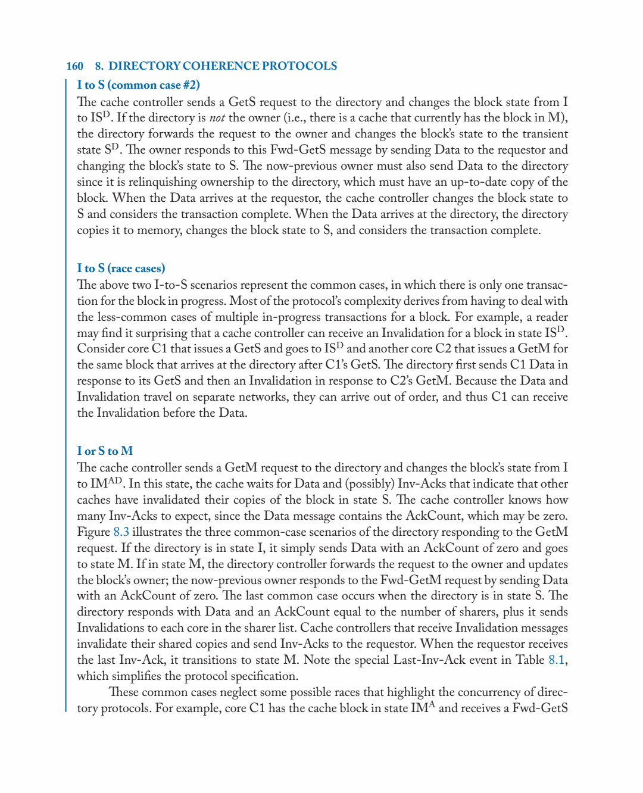
原书第 161 页PDF 183
ENGLISHfrom C2’s cache controller. This situation is possible because the directory has already sent Data to C1, sent Invalidation messages to the sharers, and changed its state to M. When C2’s GetS arrives at the directory, the directory simply forwards it to the owner, C1. This Fwd-GetS may arrive at C1 before all of the Inv-Acks arrive at C1. In this situation, our protocol simply stalls and the cache controller waits for the Inv-Acks. Because Inv-Acks travel on a separate network, they are guaranteed not to block behind the unprocessed Fwd-GetS.
中文请求，来自 C2 的缓存控制器。这种情形可能发生，因为目录已经向 C1 发送 Data，向共享者发送无效化消息，并将自身状态改为 M。当 C2 的 GetS 到达目录时，目录只需将其转发给所有者 C1。这个 Fwd-GetS 可能在全部 Inv-Ack 到达之前先到达 C1。遇到这种情况，本协议直接停顿，缓存控制器等待 Inv-Ack。由于 Inv-Ack 经过独立网络，能够保证它们不会被阻塞在尚未处理的 Fwd-GetS 之后。
ENGLISHM to I To evict a block in state M, the cache controller sends a PutM request that includes the data and changes the block state to MIA. When the directory receives this PutM, it updates the LLC/memory, responds with a Put-Ack, and transitions to state I. Until the requestor receives the Put-Ack, the block’s state remains effectively M and the cache controller must respond to forwarded coherence requests for the block. In the case where the cache controller receives a forwarded coherence request (Fwd-GetS or Fwd-GetM) between sending the PutM and receiving the Put-Ack, the cache controller responds to the Fwd-GetS or Fwd-GetM and changes its block state to SIA or IIA, respectively. These transient states are effectively S and I, respectively, but denote that the cache controller must wait for a Put-Ack to complete the transition to I.
中文M→I
为替换一个 M 态块，缓存控制器发送携带数据的 PutM 请求，并将块状态改为 MIᴬ。目录收到 PutM 后，更新 LLC／内存，回复 Put-Ack，并转入 I 态。在请求方收到 Put-Ack 之前，块实质上仍处于 M 态，缓存控制器必须响应针对该块的转发请求。如果控制器在发送 PutM 后、收到 Put-Ack 前，收到了 Fwd-GetS 或 Fwd-GetM，就响应该请求，并分别将块状态改为 SIᴬ 或 IIᴬ。这两个瞬态实质上分别对应 S 和 I，但还表明控制器必须等待 Put-Ack，才能完成向 I 的转换。
为替换一个 M 态块，缓存控制器发送携带数据的 PutM 请求，并将块状态改为 MIᴬ。目录收到 PutM 后，更新 LLC／内存，回复 Put-Ack，并转入 I 态。在请求方收到 Put-Ack 之前，块实质上仍处于 M 态，缓存控制器必须响应针对该块的转发请求。如果控制器在发送 PutM 后、收到 Put-Ack 前，收到了 Fwd-GetS 或 Fwd-GetM，就响应该请求，并分别将块状态改为 SIᴬ 或 IIᴬ。这两个瞬态实质上分别对应 S 和 I，但还表明控制器必须等待 Put-Ack，才能完成向 I 的转换。
ENGLISHS to I Unlike the snooping protocols in the previous chapter, our directory protocols do not silently evict blocks in state S. Instead, to replace a block in state S, the cache controller sends a PutS request and changes the block state to SIA. The directory receives this PutS and responds with a Put-Ack. Until the requestor receives the Put-Ack, the block’s state is effectively S. If the cache controller receives an Invalidation request after sending the PutS and before receiving the Put- Ack, it changes the block’s state to IIA. This transient state is effectively I, but it denotes that the cache controller must wait for a Put-Ack to complete the transaction from S to I.
中文S→I
与上一章的监听协议不同，这里的目录协议不允许静默地替换 S 态块。缓存控制器需要发送 PutS 请求，并将块状态改为 SIᴬ。目录收到 PutS 后，回复 Put-Ack。在请求方收到 Put-Ack 之前，块实质上仍处于 S 态。如果控制器在发出 PutS 后、收到 Put-Ack 前收到了无效化请求，就将块状态改为 IIᴬ。这个瞬态实质上对应 I，但同时表示缓存控制器必须等待 Put-Ack，才能完成 S→I 事务。
与上一章的监听协议不同，这里的目录协议不允许静默地替换 S 态块。缓存控制器需要发送 PutS 请求，并将块状态改为 SIᴬ。目录收到 PutS 后，回复 Put-Ack。在请求方收到 Put-Ack 之前，块实质上仍处于 S 态。如果控制器在发出 PutS 后、收到 Put-Ack 前收到了无效化请求，就将块状态改为 IIᴬ。这个瞬态实质上对应 I，但同时表示缓存控制器必须等待 Put-Ack，才能完成 S→I 事务。
ENGLISH8.2.6 PROTOCOL SIMPLIFICATIONS This protocol is relatively straightforward and sacrifices some performance to achieve this simplicity. We now discuss two simplifications:
中文8.2.6 协议简化
这个协议相对直接，为了简化设计而牺牲了一部分性能。下面讨论两项简化：
这个协议相对直接，为了简化设计而牺牲了一部分性能。下面讨论两项简化：
ENGLISH• The most significant simplification, other than having only three stable states, is that the protocol stalls in certain situations. For example, a cache controller stalls when it receives a forwarded request while in a transient state. A higher performance option, discussed in Section 8.7.2, would be to process the messages and add more transient states.
中文• 除了只采用三种稳定态，最重要的简化是允许协议在某些情况下停顿。例如，缓存控制器在瞬态下收到转发请求时会停顿。8.7.2 节将讨论一种性能更高的选择：处理这些消息，并相应增加瞬态。
ENGLISH• A second simplification is that the directory sends Data (and the AckCount) in response to a cache that is changing a block’s state from S to M. The cache already has valid data and thus it would be sufficient for the directory to simply send a data-less AckCount. We defer adding this new type of message until we present the MOSI protocol in Section 8.4.
中文• 第二项简化是：即使请求缓存只是将一个块从 S 态改为 M 态，目录也会发送 Data 及 AckCount。该缓存已经有有效数据，因此目录实际上只需发送不带数据的 AckCount 即可。我们将在 8.4 节介绍 MOSI 协议时，才加入这种新消息类型。
查看 原书第 161 页 的完整原版面（PDF 183）
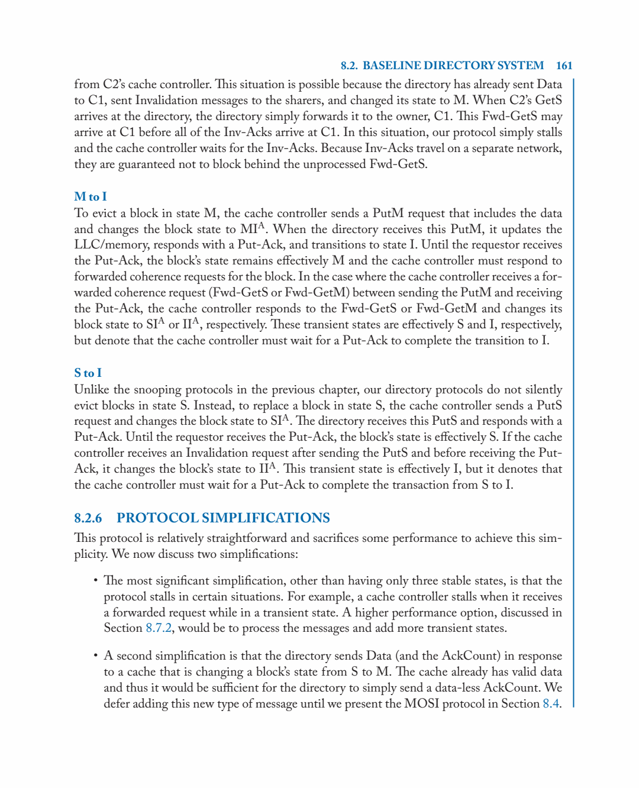
原书第 162 页PDF 184
ENGLISH8.3 ADDING THE EXCLUSIVE STATE
中文8.3 增加独占态
ENGLISHAs we previously discussed in the context of snooping protocols, adding the Exclusive (E) state is an important optimization because it enables a core to read and then write a block with only a single coherence transaction, instead of the two required by an MSI protocol. At the highest level, this optimization is independent of whether the cache coherence uses snooping or directories. If a core issues a GetS and the block is not currently shared by other cores, then the requestor may obtain the block in state E. The core may then silently upgrade the block’s state from E to M without issuing another coherence request.
中文此前讨论监听协议时已经说明，增加独占态（E）是一项重要优化：它使处理器核只需一次缓存一致性事务就能先读后写一个块，而 MSI 协议需要两次。从最高层来看，这项优化与缓存一致性采用监听机制还是目录机制无关。如果一个核发出 GetS，而其他核当前没有共享该块，请求方就可以获得 E 态的块。随后，该核可以将块从 E 静默升级到 M，而无须再发出缓存一致性请求。
ENGLISHIn this section, we add the E state to our baseline MSI directory protocol. As with the MESI snooping protocol in the previous chapter, the operation of the protocol depends on whether the E state is considered an ownership state or not. And, as with the MESI snooping protocol, the primary operational difference involves determining which coherence controller should respond to a request for a block that the directory gave to a cache in state E. The block may have been silently upgraded from E to M since the directory gave the block to the cache in state E.
中文本节为基准 MSI 目录协议加入 E 态。与上一章的 MESI 监听协议一样，协议如何运行取决于 E 是否被视为拥有所有权的状态。主要区别也与 MESI 监听协议相同：如果目录曾将一个块以 E 态交给某个缓存，之后又有请求访问该块，应该由哪个缓存一致性控制器响应？自目录以 E 态交付该块以来，缓存可能已经将其静默升级为 M。
ENGLISHIn protocols in which an E block is owned, the solution is simple. The cache with the block in E (or M) is the owner and thus must respond to requests. A coherence request sent to the directory will be forwarded to the cache with the block in state E. Because the E state is an ownership state, the eviction of an E block cannot be performed silently; the cache must issue a PutE request to the directory. Without an explicit PutE, the directory would not know that the directory was now the owner and should respond to incoming coherence requests. Because we assume in this primer that blocks in E are owned, this simple solution is what we implement in the MESI protocol in this section.
中文如果协议规定 E 态块具有所有权，解决办法就很简单。持有 E 态或 M 态块的缓存是所有者，因此必须响应请求。发给目录的缓存一致性请求会被转发到持有 E 态块的缓存。由于 E 是拥有所有权的状态，E 态块不能被静默替换；缓存必须向目录发出 PutE 请求。如果没有显式 PutE，目录就无法知道自己已经重新成为所有者，也就不知道应当响应后续请求。本书假定 E 态块具有所有权，因此本节的 MESI 协议采用这一简单方案。
ENGLISHIn protocols in which an E block is not owned, an E block can be silently evicted, but the protocol complexity increases. Consider the case where core C1 obtains a block in state E and then the directory receives a GetS or GetM from core C2. The directory knows that C1 is either (i) still in state E, (ii) in state M (if C1 did a store with a silent upgrade from E to M), or (iii) in state I (if the protocol allows C1 to perform a silent PutE). If C1 is in M, the directory must forward the request to C1 so that C1 can supply the latest version of the data. If C1 is in E, C1 or the directory may respond since they both have the same data. If C1 is in I, the directory must respond. One solution, which we describe in more detail in our case study on the SGI Origin [10] in Section 8.8.1, is to have both C1 and the directory respond. Another solution is to have the directory forward the request to C1. If C1 is in I, C1 notifies the directory to respond to C2; else, C1 responds to C2 and notifies the directory that it does not need to respond to C2.
中文如果协议规定 E 态块不具有所有权，便可以静默替换 E 态块，但协议会变得更复杂。考虑核 C1 获得一个 E 态块，随后目录收到来自 C2 的 GetS 或 GetM 的情形。目录知道 C1 可能（i）仍处于 E，（ii）处于 M——C1 执行 store 并从 E 静默升级到 M，或者（iii）处于 I——如果协议允许 C1 静默执行 PutE。若 C1 为 M，目录必须将请求转发给 C1，由 C1 提供最新数据；若 C1 为 E，C1 或目录都可以响应，因为两者持有相同数据；若 C1 为 I，则必须由目录响应。一种办法是让 C1 与目录都响应，8.8.1 节的 SGI Origin [10] 案例研究将对此作更详细的说明。另一种办法是由目录先把请求转发给 C1：若 C1 为 I，便通知目录响应 C2；否则由 C1 响应 C2，并通知目录无须响应。
ENGLISH8.3.1 HIGH-LEVEL PROTOCOL SPECIFICATION We specify a high-level view of the transactions in Figure 8.6, with differences from the MSI protocol highlighted. There are only two significant differences. First, there is a transition from I
中文8.3.1 高层协议规约
图 8.6 给出了事务的高层视图，并突出显示了与 MSI 协议的差异。显著差异只有两项。首先，增加了从 I
图 8.6 给出了事务的高层视图，并突出显示了与 MSI 协议的差异。显著差异只有两项。首先，增加了从 I
查看 原书第 162 页 的完整原版面（PDF 184）
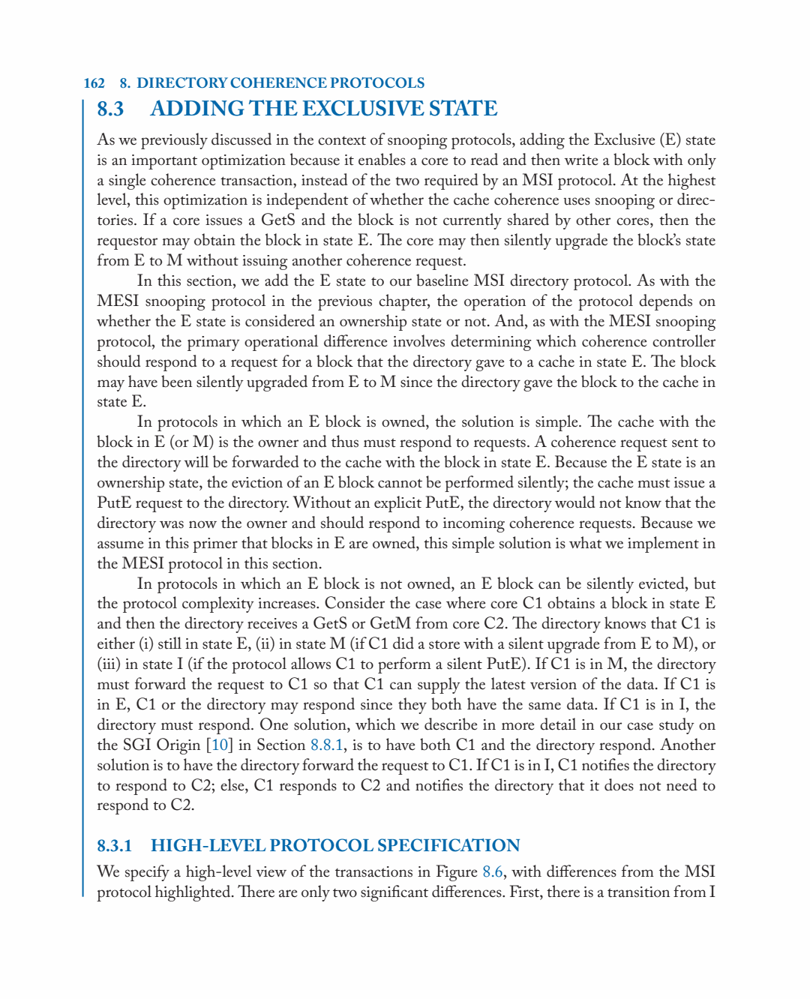
原书第 163 页PDF 185
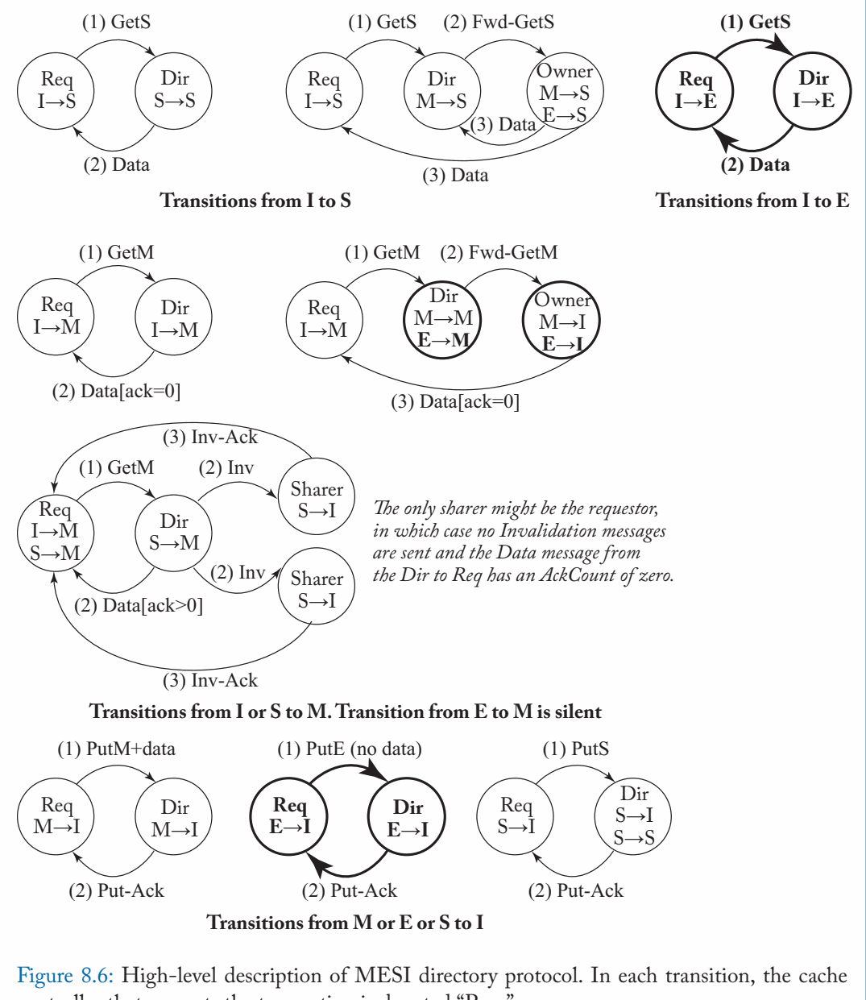
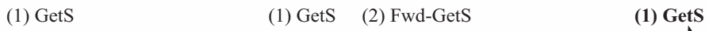
展开可搜索的英文文字
(1) GetS (1) GetS (2) Fwd-GetS (1) GetS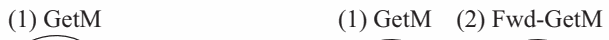
展开可搜索的英文文字
(1) GetM (1) GetM (2) Fwd-GetM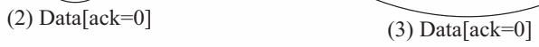
展开可搜索的英文文字
(2) Data[ack=0] (3) Data[ack=0]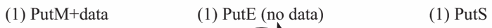
展开可搜索的英文文字
(1) PutM+data (1) PutE (no data) (1) PutS查看 原书第 163 页 的完整原版面（PDF 185）
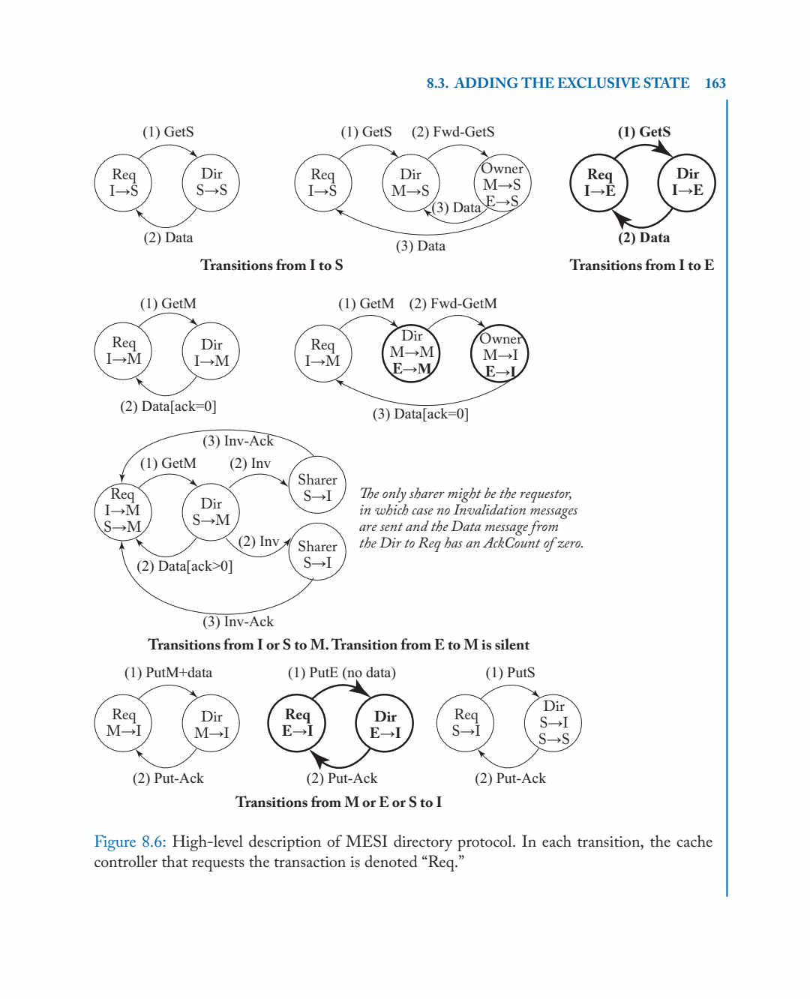
原书第 164 页PDF 186
ENGLISHto E that can occur if the directory receives a GetS for a block in state I. Second, there is a PutE transaction for evicting blocks in state E. Because E is an ownership state, an E block cannot be silently evicted. Unlike a block in state M, the E block is clean, and thus the PutE does not need to carry data; the directory already has the most up-to-date copy of the block.
中文到 E 的转换：目录收到针对 I 态块的 GetS 时，就可能发生这种转换。其次，增加了用于替换 E 态块的 PutE 事务。由于 E 是拥有所有权的状态，不能静默地替换 E 态块。与 M 态块不同，E 态块是干净的，因此 PutE 无须携带数据；目录已经持有该块的最新副本。
ENGLISH8.3.2 DETAILED PROTOCOL SPECIFICATION In Tables 8.3 and 8.4, we present the detailed specification of the MESI protocol, including transient states. Differences with respect to the MSI protocol are highlighted with boldface font. The protocol adds to the set of cache states both the stable E state as well as transient states to handle transactions for blocks initially in state E.
中文8.3.2 详细协议规约
表 8.3、8.4 给出了 MESI 协议的详细规约，包括瞬态。相对于 MSI 协议的差异以粗体标出。协议的缓存状态集合不仅增加了稳定态 E，还增加了处理初始处于 E 态的块所涉及事务的瞬态。
表 8.3、8.4 给出了 MESI 协议的详细规约，包括瞬态。相对于 MSI 协议的差异以粗体标出。协议的缓存状态集合不仅增加了稳定态 E，还增加了处理初始处于 E 态的块所涉及事务的瞬态。
ENGLISHThis protocol is somewhat more complex than the MSI protocol, with much of the added complexity at the directory controller. In addition to having more states, the directory controller must distinguish between more possible events. For example, when a PutS arrives, the directory must distinguish whether this is the “last” PutS; that is, did this PutS arrive from the only current sharer? If this PutS is the last PutS, then the directory’s state changes to I.
中文这个协议比 MSI 协议稍复杂，新增复杂性主要集中在目录控制器。除了状态更多，目录控制器还必须区分更多可能事件。例如，收到 PutS 时，目录必须判断它是否为“最后一个”PutS，也就是说，它是否来自当前唯一的共享者。若是最后一个 PutS，目录状态就转为 I。
ENGLISH8.4 ADDING THE OWNED STATE
中文8.4 增加拥有态
ENGLISHFor the same reason we added the Owned state to the baseline MSI snooping protocol in Chapter 7, an architect may want to add the Owned state to the baseline MSI directory protocol presented in Section 8.2. Recall from Chapter 2 that if a cache has a block in the Owned state, then the block is valid, read-only, dirty (i.e., it must eventually update memory), and owned (i.e., the cache must respond to coherence requests for the block). Adding the Owned state changes the protocol, compared to MSI, in three important ways: (1) a cache with a block in M that observes a Fwd-GetS changes its state to O and does not need to (immediately) copy the data back to the LLC/memory, (2) more coherence requests are satisfied by caches (in O state) than by the LLC/memory, and (3) there are more 3-hop transactions (which would have been satisfied by the LLC/memory in an MSI protocol).
中文出于与第 7 章在基准 MSI 监听协议中增加拥有态相同的原因，体系结构设计者也可能希望在 8.2 节的基准 MSI 目录协议中加入拥有态。回忆第 2 章：如果一个缓存以 Owned 态持有某块，该块就是有效、只读、脏（最终必须更新内存）且具有所有权的——也就是该缓存必须响应针对该块的缓存一致性请求。相对于 MSI，增加拥有态带来三项重要变化：（1）持有 M 态块的缓存看到 Fwd-GetS 后，转入 O，而无须立即将数据复制回 LLC／内存；（2）更多请求由 O 态缓存响应，而非由 LLC／内存响应；（3）三跳事务增多，其中一些事务在 MSI 协议中本可由 LLC／内存直接满足。
ENGLISH8.4.1 HIGH-LEVEL PROTOCOL SPECIFICATION We specify a high-level view of the transactions in Figure 8.7, with differences from the MSI protocol highlighted. The most interesting difference is the transaction in which a requestor of a block in state I or S sends a GetM to the directory when the block is in the O state in the owner cache and in the S state in one or more sharer caches. In this case, the directory forwards the GetM to the owner, and appends the AckCount. The directory also sends Invalidations to each of the sharers. The owner receives the Fwd-GetM and responds to the requestor with Data and the AckCount. The requestor uses this received AckCount to determine when it has received the last Inv-Ack. There is a similar transaction if the requestor of the GetM was the owner (in
中文8.4.1 高层协议规约
图 8.7 给出了事务的高层视图，并突出显示了相对于 MSI 协议的差异。最值得关注的差异是这样一种事务：请求方以 I 或 S 态持有该块，向目录发送 GetM，而此时所有者缓存中的该块为 O 态，一个或多个共享者缓存中的该块为 S 态。此时，目录将 GetM 转发给所有者，并附上 AckCount，同时向各共享者发送无效化消息。所有者收到 Fwd-GetM 后，向请求方回复 Data 和 AckCount。请求方利用收到的 AckCount 判断自己何时收到了最后一个 Inv-Ack。如果 GetM 请求方本身就是所有者（处于
图 8.7 给出了事务的高层视图，并突出显示了相对于 MSI 协议的差异。最值得关注的差异是这样一种事务：请求方以 I 或 S 态持有该块，向目录发送 GetM，而此时所有者缓存中的该块为 O 态，一个或多个共享者缓存中的该块为 S 态。此时，目录将 GetM 转发给所有者，并附上 AckCount，同时向各共享者发送无效化消息。所有者收到 Fwd-GetM 后，向请求方回复 Data 和 AckCount。请求方利用收到的 AckCount 判断自己何时收到了最后一个 Inv-Ack。如果 GetM 请求方本身就是所有者（处于
查看 原书第 164 页 的完整原版面（PDF 186）
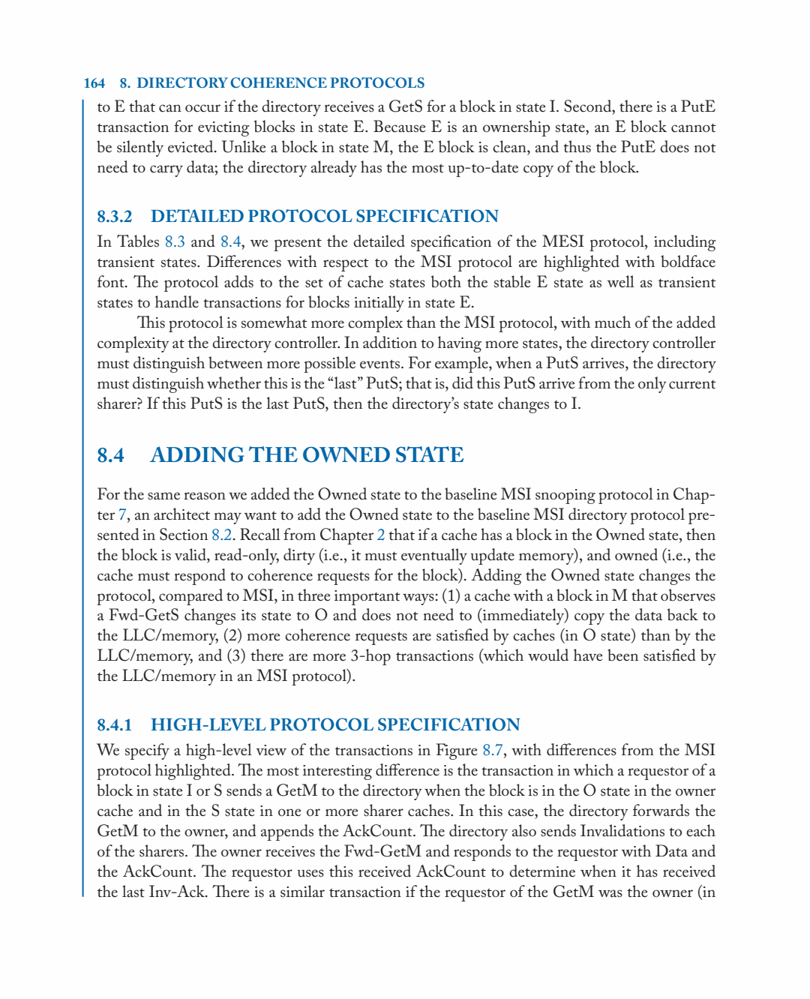
原书第 165 页PDF 187
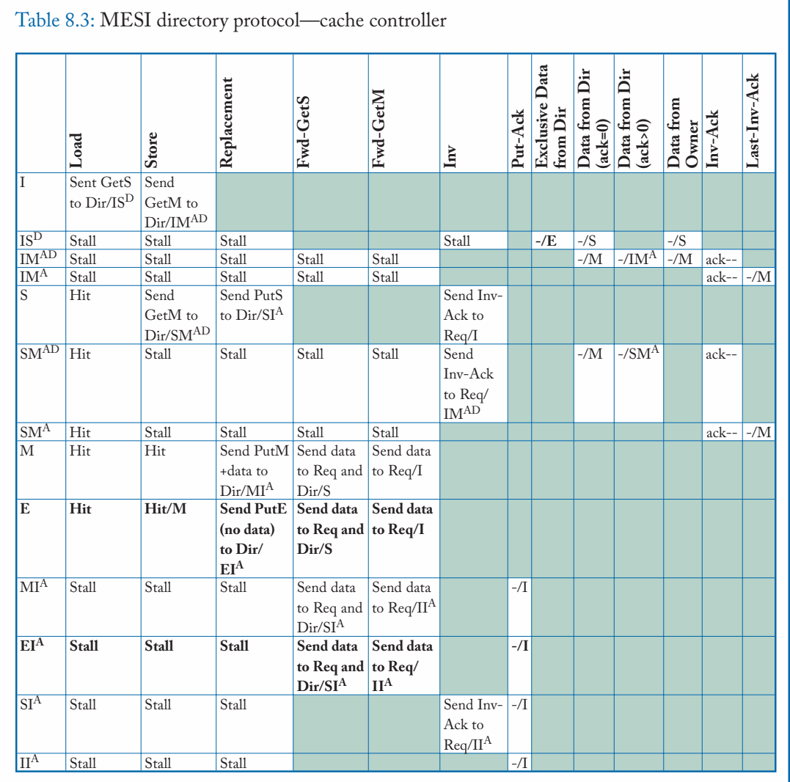
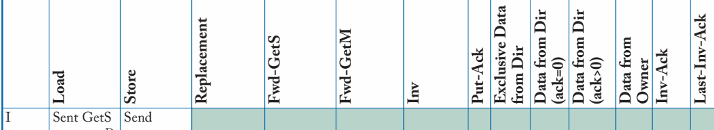
展开可搜索的英文文字
daoL erotS tnemecalpeR SteG-dwF MteG-dwF vnI kcA-tuP ataD evisulcxE riD morf riD morf ataD )0=kca( riD morf ataD )0>kca( morf ataD renwO kcA-vnI kcA-vnI-tsaL I Sent GetS Send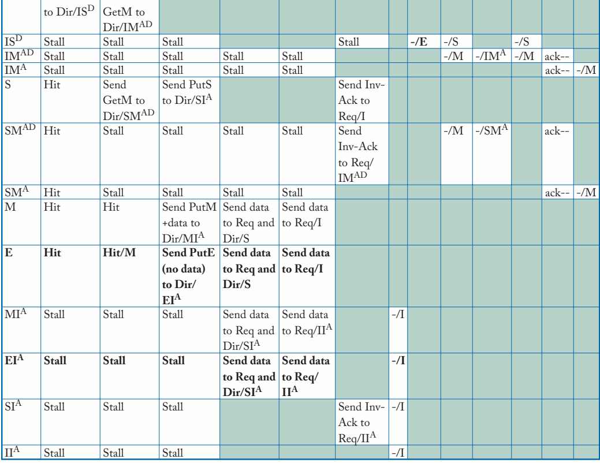
展开可搜索的英文文字
to Dir/ISD GetM to Dir/IMAD ISD Stall Stall Stall Stall -/E -/S -/S IMAD Stall Stall Stall Stall Stall -/M -/IMA -/M ack-- IMA Stall Stall Stall Stall Stall ack-- -/M S Hit Send Send PutS Send Inv- GetM to to Dir/SIA Ack to Dir/SMAD Req/I SMAD Hit Stall Stall Stall Stall Send -/M -/SMA ack-- Inv-Ack to Req/ IMAD SMA Hit Stall Stall Stall Stall ack-- -/M M Hit Hit Send PutM Send data Send data +data to to Req and to Req/I Dir/MIA Dir/S E Hit Hit/M Send PutE Send data Send data (no data) to Req and to Req/I to Dir/ Dir/S EIA MIA Stall Stall Stall Send data Send data -/I to Req and to Req/IIA Dir/SIA EIA Stall Stall Stall Send data Send data -/I to Req and to Req/ Dir/SIA IIA SIA Stall Stall Stall Send Inv- -/I Ack to Req/IIA IIA Stall Stall Stall -/I查看 原书第 165 页 的完整原版面（PDF 187）
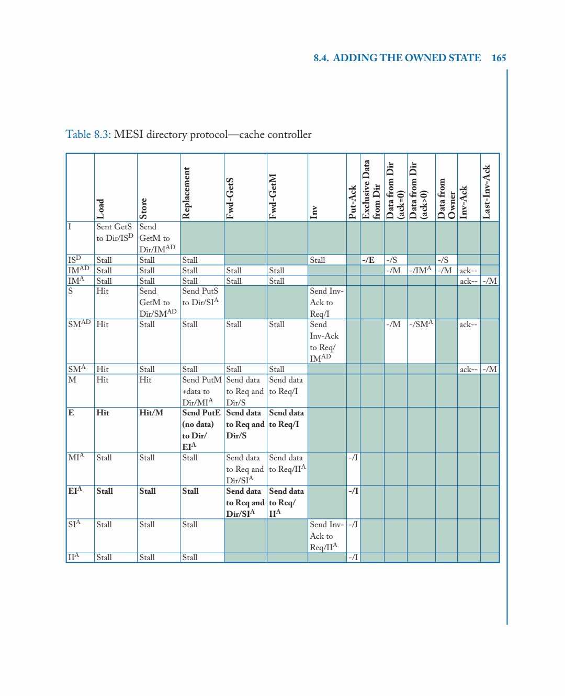
原书第 166 页PDF 188
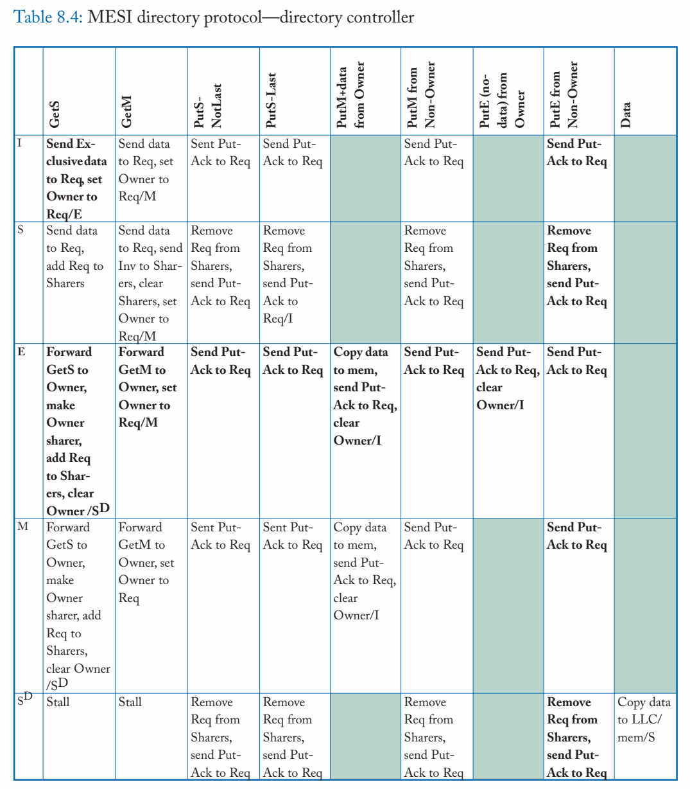
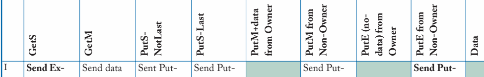
展开可搜索的英文文字
SteG MteG -StuP tsaLtoN tsaL-StuP atad+MtuP renwO morf morf MtuP renwO-noN -on( EtuP morf )atad renwO morf EtuP renwO-noN ataD I Send Ex- Send data Sent Put- Send Put- Send Put- Send Put-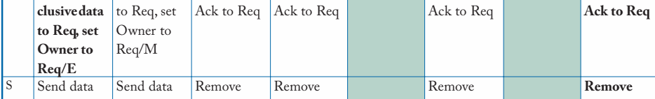
展开可搜索的英文文字
clusive data to Req, set Ack to Req Ack to Req Ack to Req Ack to Req to Req, set Owner to Owner to Req/M Req/E S Send data Send data Remove Remove Remove Remove展开可搜索的英文文字
to Req, to Req, send Req from Req from Req from Req from add Req to Inv to Shar- Sharers, Sharers, Sharers, Sharers, Sharers ers, clear send Put- send Put- send Put- send Put- Sharers, set Ack to Req Ack to Ack to Req Ack to Req Owner to Req/I Req/M E Forward Forward Send Put- Send Put- Copy data Send Put- Send Put- Send Put-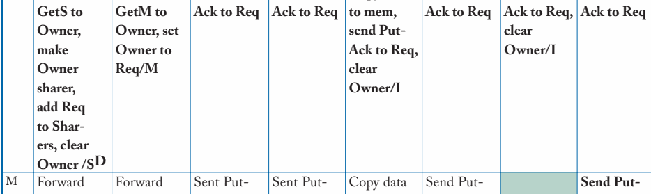
展开可搜索的英文文字
GetS to GetM to Ack to Req Ack to Req to mem, Ack to Req Ack to Req, Ack to Req Owner, Owner, set send Put- clear make Owner to Ack to Req, Owner/I Owner Req/M clear sharer, Owner/I add Req to Sharers, clear Owner /SD M Forward Forward Sent Put- Sent Put- Copy data Send Put- Send Put-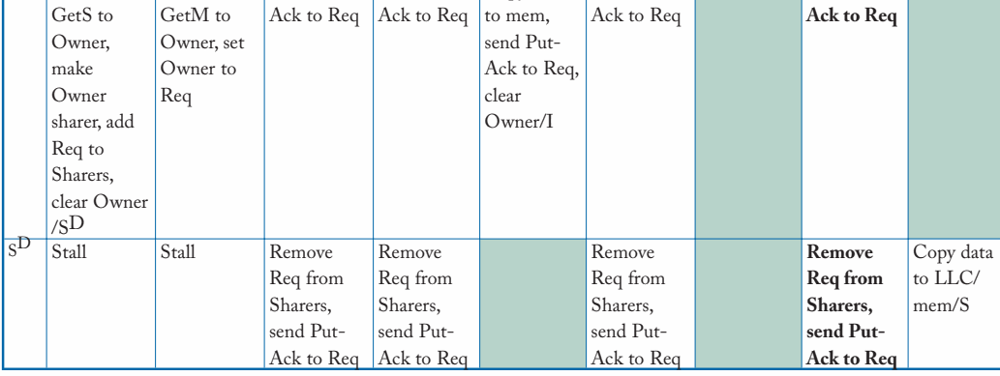
展开可搜索的英文文字
GetS to GetM to Ack to Req Ack to Req to mem, Ack to Req Ack to Req Owner, Owner, set send Putmake Owner to Ack to Req, Owner Req clear sharer, add Owner/I Req to Sharers, clear Owner /SD D S Stall Stall Remove Remove Remove Remove Copy data Req from Req from Req from Req from to LLC/ Sharers, Sharers, Sharers, Sharers, mem/S send Put- send Put- send Put- send Put- Ack to Req Ack to Req Ack to Req Ack to Req查看 原书第 166 页 的完整原版面（PDF 188）
原书第 167 页PDF 189
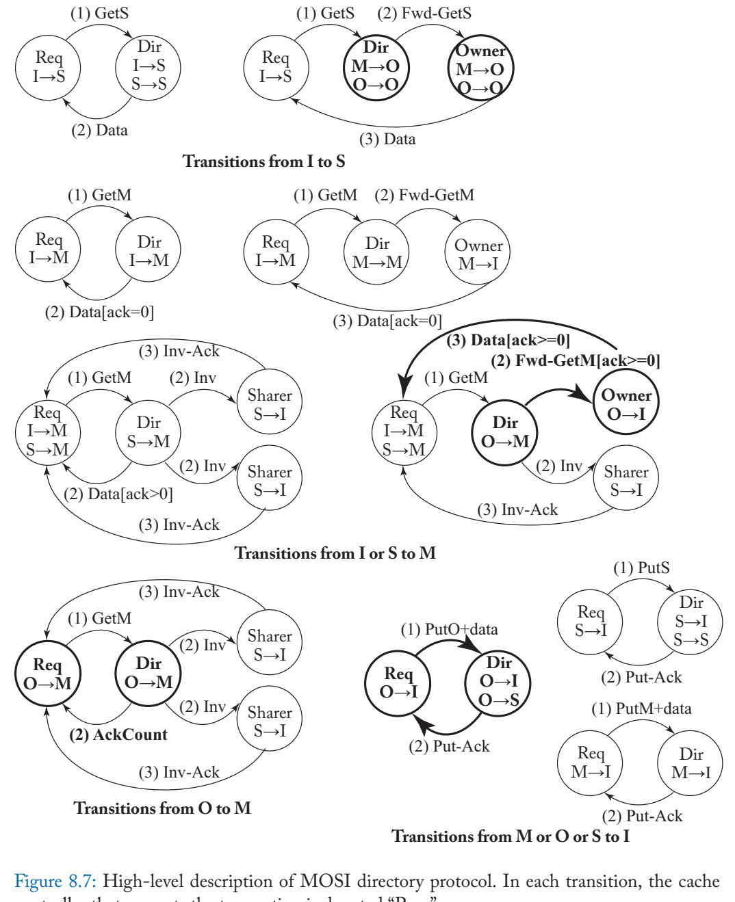
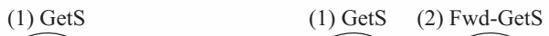
展开可搜索的英文文字
(1) GetS (1) GetS (2) Fwd-GetS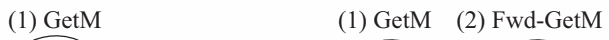
展开可搜索的英文文字
(1) GetM (1) GetM (2) Fwd-GetM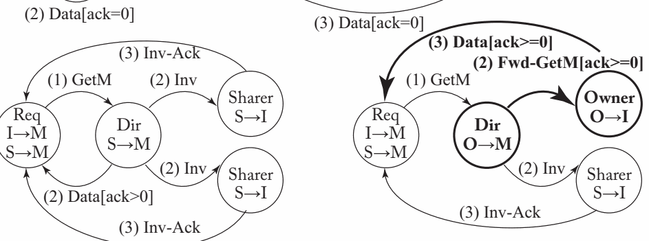
展开可搜索的英文文字
(2) Data[ack=0] (3) Data[ack=0] (3) Data[ack>=0] (3) Inv-Ack (2) Fwd-GetM[ack>=0] (1) GetM (2) Inv (1) GetM Sharer Owner Req S→I Req O→I Dir Dir I→M I→M S→M O→M S→M S→M (2) Inv (2) Inv Sharer Sharer (2) Data[ack>0] S→I S→I (3) Inv-Ack (3) Inv-Ack查看 原书第 167 页 的完整原版面（PDF 189）
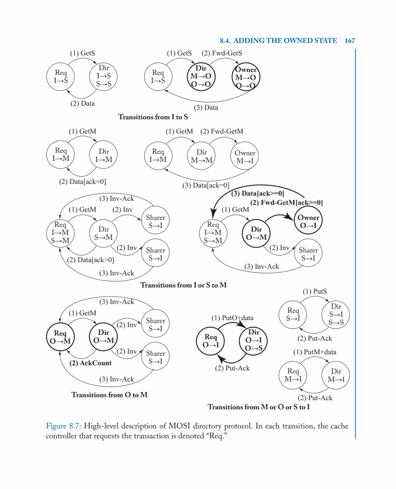
原书第 168 页PDF 190
ENGLISHstate O). The difference here is that the directory sends the AckCount directly to the requestor because the requestor is the owner.
中文处于 O）。区别在于，这里请求方就是所有者，因此目录直接把 AckCount 发给请求方。
ENGLISHThis protocol has a PutO transaction that is nearly identical to the PutM transaction. It contains data for the same reason that the PutM transaction contains data, i.e., because both M and O are dirty states.
中文该协议还有一个几乎与 PutM 相同的 PutO 事务。它包含数据的原因与 PutM 一样：M 和 O 都是脏状态。
ENGLISH8.4.2 DETAILED PROTOCOL SPECIFICATION Tables 8.5 and 8.6 present the detailed specification of the MOSI protocol, including transient states. Differences with respect to the MSI protocol are highlighted with boldface font. The protocol adds to the set of cache states both the stable O state as well as transient OMAC, OMA, and OIA states to handle transactions for blocks initially in state O. The state OMAC indicates that the cache is waiting for both Inv-Acks (A) from caches and an AckCount (C) from the directory, but not data. Because this block started in state O, it already had valid data.
中文8.4.2 协议详细规约
表 8.5、8.6 给出包含瞬态的 MOSI 详细规约，与 MSI 的差异用粗体标出。缓存状态增加稳定态 O，以及处理初始 O 块事务的瞬态 OMAC（原文 AC 为上标）、OMᴬ、OIᴬ。OMAC 表示缓存既在等待其他缓存的 Inv-Ack（A），也在等待目录的 AckCount（C），但不等待数据。因为块最初为 O，缓存已持有有效数据。
表 8.5、8.6 给出包含瞬态的 MOSI 详细规约，与 MSI 的差异用粗体标出。缓存状态增加稳定态 O，以及处理初始 O 块事务的瞬态 OMAC（原文 AC 为上标）、OMᴬ、OIᴬ。OMAC 表示缓存既在等待其他缓存的 Inv-Ack（A），也在等待目录的 AckCount（C），但不等待数据。因为块最初为 O，缓存已持有有效数据。
ENGLISHAn interesting situation arises when core C1’s cache controller has a block in OMAC or SMAD and receives a Fwd-GetM or Invalidation from core C2 for that block. C2’s GetM must have been ordered at the directory before C1’s GetM, for this situation to arise. Thus, the directory state changes to M (owned by C2) before observing C1’s GetM. When C2’s Fwd-GetM or Invalidation arrives at C1, C1 must be aware that C2’s GetM was ordered first. Thus, C1’s cache state changes from either OMAC or SMAD to IMAD. The forwarded GetM or Invalidation from C2 invalidated C1’s cache block and now C1 must wait for both Data and Inv-Acks.
中文一个值得注意的情况是：C1 的块处于 OMAC 或 SMᴬᴰ，收到 C2 针对该块的 Fwd-GetM 或无效化消息。只有当 C2 的 GetM 在目录处先于 C1 的 GetM 排序时，这种情况才可能发生。因此，目录在观察到 C1 的 GetM 之前，已转为 M，所有者为 C2。C2 的 Fwd-GetM 或无效化消息到达 C1 时，C1 必须认识到 C2 的 GetM 先完成排序，并将 OMAC 或 SMᴬᴰ 转为 IMᴬᴰ。C2 的转发请求或无效化已使 C1 的块无效，现在 C1 必须同时等待 Data 和 Inv-Ack。
ENGLISH8.5 REPRESENTING DIRECTORY STATE
中文8.5 目录状态的表示
ENGLISHIn the previous sections, we have assumed a complete directory; that is, the directory maintains the complete state for each block, including the full set of caches that (may) have shared copies. Yet this assumption contradicts the primary motivation for directory protocols: scalability. In a system with a large number of caches (i.e., a large number of potential sharers of a block), maintaining the complete set of sharers for each block requires a significant amount of storage, even when using a compact bit-vector representation. For a system with a modest number of caches, it may be reasonable to maintain this complete set, but the architects of larger-scale systems may wish for more scalable solutions to maintaining directory state.
中文此前假设使用完整目录，即为每个块维护完整状态，包括所有可能持有共享副本的缓存。但这一假设与目录协议的主要动机——可扩展性——相矛盾。缓存数量很大时，也就是块的潜在共享者很多时，即使用紧凑的位向量，为每个块维护完整共享者集合仍需大量存储。对于缓存数较少的系统，这可能合理；更大系统的架构师则希望采用更具可扩展性的目录状态维护方案。
ENGLISHThere are many ways to reduce how much state the directory maintains for each block. Here we discuss two important techniques: coarse directories and limited pointers. We discuss these techniques independently, but observe that they can be combined. We contrast each solution with the baseline design, illustrated in the top entry of Figure 8.8.
中文减少每块目录状态的方法很多。这里讨论两种重要技术：粗粒度目录和有限指针。虽然分别介绍，但二者可以组合使用。我们将各方案与图 8.8 顶部的基准设计对比。
ENGLISH8.5.1 COARSE DIRECTORY Having the complete set of sharers enables the directory to send Invalidation messages to exactly those cache controllers that have the block in state S. One way to reduce the directory state is
中文8.5.1 粗粒度目录
完整共享者集合使目录能准确地向所有持有 S 块的缓存发送无效化消息。减少目录状态的一种方法，
完整共享者集合使目录能准确地向所有持有 S 块的缓存发送无效化消息。减少目录状态的一种方法，
查看 原书第 168 页 的完整原版面（PDF 190）
原书第 169 页PDF 191
展开可搜索的英文文字
daoL erotS tnemecalpeR SteG-dwF MteG-dwF vnI kcA-tuP riD morf ataD )0=kca( riD morf ataD )0>kca( morf ataD renwO morf tnuoCkcA riD kcA-vnI kcA-vnI-tsaL I Sent GetS Send展开可搜索的英文文字
to Dir/ GetM to ISD Dir/IMAD ISD Stall Stall Stall Stall -/S -/S IMAD Stall Stall Stall Stall Stall -/M -/IMA -/M ack-- IMA Stall Stall Stall Stall Stall ack-- -/M S Hit Send Send PutS Send GetM to Dir/ Inv-Ack to Dir/ SIA to Req/I SMAD SMAD Hit Stall Stall Stall Stall Send -/M -/SMA ack-- Inv-Ack to Req/ IMAD SMA Hit Stall Stall Stall Stall ack-- -/M M Hit Hit Send Send data Send data PutM to Req/O to Req/I +data to Dir/MIA MIA Stall Stall Stall Send data Send data -/I to Req/ to Req/IIA OIA O Hit Send Send Send data Send data GetM PutO to Req to Req/I to Dir/ +data to OMAC Dir/OIA OMAC Hit Stall Stall Send data Send data -/OMA ack-to Req to Req/ IMAD OMA Hit Stall Stall Send data Stall ack-- -/M to Req OIA Stall Stall Stall Send data Send data -/I to Req to Req/ IIA SIA Stall Stall Stall Send -/I Inv-Ack to Req/ IIA IIA Stall Stall Stall -/I查看 原书第 169 页 的完整原版面（PDF 191）
原书第 170 页PDF 192
展开可搜索的英文文字
SteG morf MteG renwO morf MteG renwOnoN -StuP tsaLtoN tsaL-StuP atad+MtuP renwO morf atad+MtuP morf renwO-noN atad+OtuP renwO morf atad+OtuP morf renwO-noN I Send data Send data Send Put- Send Put- Send Put- Send Putto Req, to Req, set Ack to Req Ack to Req Ack to Req Ack to Req add Req to Owner to Sharer/S Req/M S Send data Send data Remove Remove Remove Remove to Req, to Req, Req from Req from Req from Req from add Req to send Inv to Sharers, Sharers, Sharers, Sharers, Sharers Sharers, set send Put- send Put- send Put- send Put- Owner to Ack to Req Ack to Ack to Req Ack to Req Req, clear Req/I Sharers/M O Forward Send Ack- Forward Remove Remove Remove Remove Copy data Remove GetS to Count to GetM to Req from Req from Req from Req from to mem, Req from Owner, Req, send Owner, Sharers, Sharers, Sharers, Sharers, send Put- Sharers, add Req to Inv to Shar- send Inv to send Put- send Put- copy data to send Put- Ack to Req, send Put- Sharers ers, clear Sharers, set Ack to Req Ack to Req mem, send Ack to Req clear Own- Ack to Req Sharers/M Owner to Put-Ack to er/S Req, clear Req, clear Sharers, Owner/S send Ack- Count to Req/M M Forward Forward Sent Put- Sent Put- Copy data Sent Put- Sent Put- GetS to GetM to Ack to Req Ack to Req to mem, Ack to Req Ack to Req Owner, Owner, set send Putadd Req to Owner to Ack to Req, Sharers/O Req clear Owner/IENGLISHto conservatively maintain a coarse list of sharers that is a superset of the actual set of sharers. That is, a given entry in the sharer list corresponds to a set of K caches, as illustrated in the middle entry of Figure 8.8. If one or more of the caches in that set (may) have the block in state S, then that bit in the sharer list is set. A GetM will cause the directory controller to send an Invalidation to all K caches in that set. Thus, coarse directories reduce the directory state at the expense of extra inter-connection network bandwidth for unnecessary Invalidation messages, plus the cache controller bandwidth to process these extra Invalidation messages.数学符号与上下标以此原版面为准

中文是保守地维护一个粗粒度共享者列表，它是真实共享者集合的超集。如图 8.8 中部，每个列表位对应 K 个缓存组成的集合。如果集合中的一个或多个缓存可能持有 S 块，就将该位置位。GetM 到达时，目录向集合内全部 K 个缓存发送无效化。因此，粗粒度目录以额外的互连带宽和缓存控制器处理带宽为代价减少目录状态，这些额外开销用于不必要的无效化消息。
查看 原书第 170 页 的完整原版面（PDF 192）
原书第 171 页PDF 193
ENGLISH8.5.2 LIMITED POINTER DIRECTORY In a chip with C caches, a complete sharer list requires C entries, one bit each, for a total of C bits. However, studies have shown that many blocks have zero sharers or one sharer. A limited pointer directory exploits this observation by having i (i<C) entries, where each entry requires log C bits, for a total of i * log C bits, as illustrated in the bottom entry of Figure 8.8. A 2 2 limited pointer directory requires some additional mechanism to handle (hopefully uncommon) situations in which the system attempts to add an i+1th sharer. There are three well-studied options for handling these situations, denoted using the notation Dir X [2, 8], where i refers i to the number of pointers to sharers, and X refers to the mechanism for handling situations in which the system attempts to add an i+1th sharer.数学符号与上下标以此原版面为准

中文8.5.2 有限指针目录
一颗具有 C 个缓存的芯片，完整共享者列表需要 C 个各占 1 比特的条目，总计 C 比特。但研究发现，许多块只有零个或一个共享者。有限指针目录利用这一特性，仅配置 i 个条目（i<C），每项占 log₂C 比特，总计 i×log₂C 比特，如图 8.8 底部。系统尝试添加第 i+1 个共享者时，有限指针目录需要额外机制处理，希望这种情况不常发生。已有三种充分研究的方案，用 DirᵢX 表示 [2, 8]：i 是共享者指针数量，X 是指针不足时的处理机制。
一颗具有 C 个缓存的芯片，完整共享者列表需要 C 个各占 1 比特的条目，总计 C 比特。但研究发现，许多块只有零个或一个共享者。有限指针目录利用这一特性，仅配置 i 个条目（i<C），每项占 log₂C 比特，总计 i×log₂C 比特，如图 8.8 底部。系统尝试添加第 i+1 个共享者时，有限指针目录需要额外机制处理，希望这种情况不常发生。已有三种充分研究的方案，用 DirᵢX 表示 [2, 8]：i 是共享者指针数量，X 是指针不足时的处理机制。
ENGLISH• Broadcast (Dir B): If there are already i sharers and another GetS arrives, the directory i controller sets the block’s state to indicate that a subsequent GetM requires the directory to broadcast the Invalidation to all caches (i.e., a new “too many sharers” state). A drawback of Dir B is that the directory could have to broadcast to all C caches even when i there are only K sharers (i<K<C), requiring the directory controller to send (and the cache controllers to process) C-K unnecessary Invalidation messages. The limiting case, Dir B, 0 takes this approach to the extreme by eliminating all pointers and requiring a broadcast on all coherence operations. The original Dir B proposal maintained two state bits per block, 0 encoding the three MSI states plus a special “Single Sharer” state [3]. This new state helps eliminate a broadcast when a cache tries to upgrade its S copy to an M copy (similar to the数学符号与上下标以此原版面为准

中文• 广播（DirᵢB）：已有 i 个共享者又收到 GetS 时，目录把块标记为“共享者过多”的新状态，表示后续 GetM 必须向所有缓存广播无效化。缺点是，即使实际只有 K 个共享者（i<K<C），仍可能向全部 C 个缓存广播，使目录额外发送、各缓存额外处理 C−K 条无效化。极端情况 Dir₀B 完全取消指针，所有缓存一致性操作均广播。最初的 Dir₀B 方案为每块维护两位状态，编码 MSI 三态以及特殊的“单共享者”状态 [3]。新状态可在缓存尝试把 S 升级为 M 时避免广播，类似于
查看 原书第 171 页 的完整原版面（PDF 193）
原书第 172 页PDF 194
ENGLISHExclusive state optimization). Similarly, the directory’s I state eliminates broadcast when memory owns the block. AMD’s Coherent HyperTransport [6] implements a version of Dir B that uses no directory state, forgoing these optimizations but eliminating the need 0 to store any directory state. All requests sent to the directory are then broadcast to all caches.
中文独占态优化。同样，目录的 I 状态可在内存拥有块时避免广播。AMD Coherent HyperTransport [6] 实现了一种完全不保存目录状态的 Dir₀B，放弃上述优化，却消除了目录状态存储；所有送往目录的请求都向全部缓存广播。
ENGLISH• No Broadcast (Dir NB): If there are already i sharers and another GetS arrives, the dii rectory asks one of the current sharers to invalidate itself to make room in the sharer list for the new requestor. This solution can incur significant performance penalties for widely shared blocks (i.e., blocks shared by more than i nodes), due to the time spent invalidating sharers. Dir NB is especially problematic for systems with coherent instruction caches i because code is frequently widely shared.数学符号与上下标以此原版面为准

中文• 不广播（DirᵢNB）：已有 i 个共享者又收到 GetS 时，目录要求一个现有共享者使自身副本无效，为新请求方腾出列表位置。对于共享范围广、即被超过 i 个节点共享的块，无效化共享者所需时间可能造成显著性能损失。具有一致性指令缓存的系统尤其容易受影响，因为代码经常被广泛共享。
ENGLISH• Software (Dir SW): If there are already i sharers and another GetS arrives, the system traps i to a software handler. Trapping to software enables great flexibility, such as maintaining a full sharer list in software-managed data structures. However, because trapping to software incurs significant performance costs and implementation complexities, this approach has seen limited commercial acceptance.数学符号与上下标以此原版面为准

中文• 软件（DirᵢSW）：已有 i 个共享者又收到 GetS 时，系统陷入软件处理程序。软件处理非常灵活，例如可在软件管理的数据结构中维护完整共享者列表。但陷入软件会带来显著性能开销和实现复杂度，因此商业采用有限。
ENGLISH8.6 DIRECTORY ORGANIZATION
中文8.6 目录组织
ENGLISHLogically, the directory contains a single entry for every block of memory. Many traditional directory-based systems, in which the directory controller was integrated with the memory controller, directly implemented this logical abstraction by augmenting memory to hold the directory. For example, the SGI Origin added additional DRAM chips to store the complete directory state with each block of memory [10].
中文逻辑上，目录为每个内存块保存一个条目。许多传统目录系统将目录控制器集成在内存控制器中，通过扩充内存保存目录，直接实现这一逻辑抽象。例如，SGI Origin 增加 DRAM 芯片，在每个内存块旁保存完整目录状态 [10]。
ENGLISHHowever, with today’s multicore processors and large LLCs, the traditional directory design makes little sense. First, architects do not want the latency and power overhead of a directory access to off-chip memory, especially for data cached on chip. Second, system designers balk at the large off-chip directory state when almost all memory blocks are not cached at any given time. These drawbacks motivate architects to optimize the common case by caching only a subset of directory entries on chip. In the rest of this section, we discuss directory cache designs, several of which were previously categorized by Marty and Hill [13].
中文但对于如今具有大型 LLC 的多核处理器，传统设计已不太合适。首先，架构师不希望为目录访问承受片外内存延迟和功耗，尤其数据已经缓存在片上时。其次，任意时刻绝大多数内存块都未被缓存，为它们保存庞大的片外目录状态难以接受。这促使架构师优化常见情况，仅在片上缓存一部分目录条目。本节后续讨论目录缓存设计，其中一些已由 Marty 和 Hill 分类 [13]。
ENGLISHLike conventional instruction and data caches, a directory cache [7] provides faster access to a subset of the complete directory state. Because directories summarize the states of coherent caches, they exhibit locality similar to instruction and data accesses, but need only store each block’s coherence state rather than its data. Thus, relatively small directory caches achieve high hit rates. Directory caching has no impact on the functionality of the coherence protocol; it simply reduces the average directory access latency. Directory caching has become even more important in the era of multicore processors. In older systems in which cores resided on separate chips and/or boards, message latencies were sufficiently long that they tended to amortize the
中文与常规指令和数据缓存一样，目录缓存 [7] 使完整目录状态的一个子集能够被更快访问。目录汇总各一致性缓存的状态，因此呈现与指令和数据访问类似的局部性，但只需保存每块的缓存一致性状态，无须保存数据。因此，相对较小的目录缓存也能获得较高命中率。目录缓存不改变协议功能，只降低平均目录访问延迟。在多核时代它更加重要。过去，各核位于不同芯片或板卡上，消息延迟足够长，往往能摊薄
查看 原书第 172 页 的完整原版面（PDF 194）
原书第 173 页PDF 195
ENGLISHdirectory access latency. Within a multicore processor, messages can travel from one core to another in a handful of cycles, and the latency of an off-chip directory access tends to dwarf communication latencies and become a bottleneck. Thus, for multicore processors, there is a strong incentive to implement an on-chip directory cache to avoid costly off-chip accesses.
中文目录访问延迟。在多核处理器内部，消息只需几个周期就能从一个核到另一个核；片外目录访问延迟往往远大于通信延迟，成为瓶颈。因此，多核处理器有很强的动机实现片上目录缓存，避免昂贵的片外访问。
ENGLISHThe on-chip directory cache contains a subset of the complete set of directory entries. Thus, the key design issue is handling directory cache misses, i.e., when a coherence request arrives for a block whose directory entry is not in the directory cache.
中文片上目录缓存只保存全部目录条目的一个子集，因此关键设计问题是如何处理目录缓存未命中，即请求到达时，其块的目录条目不在目录缓存中。
ENGLISHWe summarize the design options in Table 8.7 and describe them next.
中文表 8.7 汇总各设计选项，下文分别介绍。
展开可搜索的英文文字
Inclusive Directory Caches (Section 8.6.2) Directory Null Cache Backed Inclusive Directory Cache Standalone Inclusive Directory Directory by DRAM Embedded in Inclusive LLC Cache (Section 8.6.2) Cache Directory (Section 8.6.2) (Section 8.6.3) (Section 8.6.1) No Recalls With Recalls No Recalls With Recalls Directory DRAM LLC LLC None location Uses DRAM Yes No No No Miss at direc- Must access Block must be I Block must be I Block could be tory implies DRAM in any state→ must broadcast Inclusion None LLC includes L1s Directory cache includes L1s None requirements Implementation DRAM plus Larger LLC Larger LLC Highly associa- Storage for None costs separate on- blocks; highly blocks tive storage for redundant tags chip cache associative LLC redundant tags Replacement None None Desirable Required Desirable None notifi cationENGLISH8.6.1 DIRECTORY CACHE BACKED BY DRAM The most straightforward design is to keep the complete directory in DRAM, as in traditional multi-chip multiprocessors, and use a separate directory cache structure to reduce the average access latency. A coherence request that misses in this directory cache leads to an access of this DRAM directory. This design, while straightforward, suffers from several important drawbacks. First, it requires a significant amount of DRAM to hold the directory, including state for the vast majority of blocks that are not currently cached on the chip. Second, because the directory cache is decoupled from the LLC, it is possible to hit in the LLC but miss in the directory cache, thus incurring a DRAM access even though the data is available locally. Finally, directory
中文8.6.1 由 DRAM 提供后备存储的目录缓存
最直接的设计，是像传统多芯片多处理器一样，在 DRAM 中保存完整目录，再用独立目录缓存降低平均访问延迟。请求在目录缓存未命中时，访问 DRAM 目录。方案虽直接，却有几个重要缺点。第一，需要大量 DRAM 存放目录，其中包括当前未被片上缓存的绝大多数块的状态。第二，目录缓存与 LLC 解耦，可能 LLC 命中而目录缓存未命中，于是即便数据就在本地，仍需访问 DRAM。最后，目录
最直接的设计，是像传统多芯片多处理器一样，在 DRAM 中保存完整目录，再用独立目录缓存降低平均访问延迟。请求在目录缓存未命中时，访问 DRAM 目录。方案虽直接，却有几个重要缺点。第一，需要大量 DRAM 存放目录，其中包括当前未被片上缓存的绝大多数块的状态。第二，目录缓存与 LLC 解耦，可能 LLC 命中而目录缓存未命中，于是即便数据就在本地，仍需访问 DRAM。最后，目录
查看 原书第 173 页 的完整原版面（PDF 195）
原书第 174 页PDF 196
ENGLISHcache replacements must write the directory entries back to DRAM, incurring high latency and power overheads.
中文缓存替换必须将条目写回 DRAM，造成较高延迟和功耗。
ENGLISH8.6.2 INCLUSIVE DIRECTORY CACHES We can design directory caches that are more cost-effective by exploiting the observation that we need only cache directory states for blocks that are being cached on the chip. We refer to a directory cache as an inclusive directory cache if it holds directory entries for a superset of all blocks cached on the chip. An inclusive directory cache serves as a “perfect” directory cache that never misses for accesses to blocks cached on chip. There is no need to store a complete directory in DRAM. A miss in an inclusive directory cache indicates that the block is in state I; a miss is not the precursor to accessing some backing directory store.
中文8.6.2 包含式目录缓存
利用“只需缓存片上实际缓存的块之目录状态”这一事实，可以设计成本效益更高的目录缓存。如果目录缓存包含的条目覆盖片上所有缓存块的超集，就称为包含式目录缓存。它相当于一种“完美”目录缓存：访问片上已缓存块时永不未命中，无须在 DRAM 中存放完整目录。包含式目录未命中表示块为 I，而不是需要继续访问某个后备目录存储。
利用“只需缓存片上实际缓存的块之目录状态”这一事实，可以设计成本效益更高的目录缓存。如果目录缓存包含的条目覆盖片上所有缓存块的超集，就称为包含式目录缓存。它相当于一种“完美”目录缓存：访问片上已缓存块时永不未命中，无须在 DRAM 中存放完整目录。包含式目录未命中表示块为 I，而不是需要继续访问某个后备目录存储。
ENGLISHWe now discuss two inclusive directory cache designs, plus an optimization that applies to both designs.
中文下面讨论两种包含式目录缓存设计，以及适用于两者的一项优化。
ENGLISHInclusive Directory Cache Embedded in Inclusive LLC The simplest directory cache design relies on an LLC that maintains inclusion with the upperlevel caches. Cache inclusion means that if a block is in an upper-level cache then it must also be present in a lower-level cache. For the system model of Figure 8.1, LLC inclusion means that if a block is in a core’s L1 cache, then it must also be in the LLC.
中文嵌入包含式 LLC 的包含式目录缓存
最简单的方案依赖 LLC 对上层缓存保持包含性。缓存包含性意味着：块若在上层缓存中，就必须也在下层缓存中。对于图 8.1 模型，LLC 包含性意味着：若块在某核的 L1 中，就必须也在 LLC 中。
最简单的方案依赖 LLC 对上层缓存保持包含性。缓存包含性意味着：块若在上层缓存中，就必须也在下层缓存中。对于图 8.1 模型，LLC 包含性意味着：若块在某核的 L1 中，就必须也在 LLC 中。
ENGLISHA consequence of LLC inclusion is that if a block is not in the LLC, it is also not in an L1 cache and thus must be in state I for all caches on the chip. An inclusive directory cache exploits this property by embedding the coherence state of each block in the LLC. If a coherence request is sent to the LLC/directory controller and the requested address is not present in the LLC, then the directory controller knows that the requested block is not cached on-chip and thus is in state I in all the L1s.
中文因此，如果块不在 LLC 中，它就不在任何 L1 中，在芯片所有缓存中必为 I。包含式目录缓存利用这一性质，将每块的一致性状态嵌入 LLC。请求发往 LLC/目录控制器而目标地址不在 LLC 中时，目录就知道该块未在片上缓存，所有 L1 中均为 I。
ENGLISHBecause the directory mirrors the contents of the LLC, the entire directory cache may be embedded in the LLC simply by adding extra bits to each block in the LLC. These added bits can lead to non-trivial overhead, depending on the number of cores and the format in which directory state is represented. We illustrate the addition of this directory state to an LLC cache block in Figure 8.9, comparing it to an LLC block in a system without the LLC-embedded directory cache.
中文由于目录内容与 LLC 对应，只需为每个 LLC 块增加状态位，就可以将整个目录缓存嵌入 LLC。增加位的开销可能相当可观，取决于核数和目录状态表示格式。图 8.9 将带嵌入式目录的 LLC 块，与没有这种目录的 LLC 块进行对比。
ENGLISHUnfortunately, LLC inclusion has several important drawbacks. First, while LLC inclusion can be maintained automatically for private cache hierarchies (if the lower-level cache has sufficient associativity [4]), for the shared caches in our system model, it is generally necessary to send special “Recall” requests to invalidate blocks from the L1 caches when replacing a block in the LLC (discussed later in this section). More importantly, LLC inclusion requires maintaining redundant copies of cache blocks that are in upper-level caches. In multicore processors, the collective capacity of the upper-level caches may be a significant fraction of (or sometimes, even larger than) the capacity of the LLC.
中文但 LLC 包含性有若干重要缺点。第一，对于私有缓存层次，如果下层缓存相联度足够 [4]，可自动维持包含性；对于本模型的共享缓存，替换 LLC 块时通常必须发送专门的 Recall（召回）请求，使 L1 中的对应块无效，下文将讨论。更重要的是，包含性要求为上层缓存块保留冗余数据副本。多核处理器中，上层缓存的总容量可能占 LLC 容量的很大比例，有时甚至更大。
查看 原书第 174 页 的完整原版面（PDF 196）
原书第 175 页PDF 197
ENGLISHStandalone Inclusive Directory Cache We now present an inclusive directory cache design that does not rely on LLC inclusion. In this design, the directory cache is a standalone structure that is logically associated with the directory controller, instead of being embedded in the LLC itself. For the directory cache to be inclusive, it must contain directory entries for the union of the blocks in all the L1 caches because a block in the LLC but not in any L1 cache must be in state I. Thus, in this design, the directory cache consists of duplicate copies of the tags at all L1 caches. Compared to the previous design, this design is more flexible, by virtue of not requiring LLC inclusion, but it has the added storage cost for the duplicate tags.
中文独立包含式目录缓存
下面给出不依赖 LLC 包含性的方案。目录缓存是逻辑上关联目录控制器的独立结构，而非嵌入 LLC。要保持目录包含性，它必须保存所有 L1 缓存块并集的目录条目，因为一个块若只在 LLC 而不在任何 L1 中，必为 I。因此，该目录缓存由所有 L1 标签的重复副本构成。相比前一设计，它不要求 LLC 包含性，因而更灵活，但增加了重复标签的存储成本。
下面给出不依赖 LLC 包含性的方案。目录缓存是逻辑上关联目录控制器的独立结构，而非嵌入 LLC。要保持目录包含性，它必须保存所有 L1 缓存块并集的目录条目，因为一个块若只在 LLC 而不在任何 L1 中，必为 I。因此，该目录缓存由所有 L1 标签的重复副本构成。相比前一设计，它不要求 LLC 包含性，因而更灵活，但增加了重复标签的存储成本。
ENGLISHThis inclusive directory cache has some significant implementation costs. Most notably, it requires a highly associative directory cache. (If we embed the directory cache in an inclusive LLC, then the LLC must also be highly associative.) Consider the case of a chip with C cores, each of which has a K-way set-associative L1 cache. The directory cache must be C*K-way associative to hold all L1 cache tags, and the associativity unfortunately grows linearly with core count. We illustrate this issue for K=2 in Figure 8.10.
中文该方案仍有显著实现成本，最突出的是目录缓存需要很高的相联度。如果将目录嵌入包含式 LLC，LLC 同样需要很高相联度。考虑 C 核芯片，每核 L1 为 K 路组相联；为容纳所有 L1 标签，目录缓存必须达到 C×K 路相联，其相联度随核数线性增长。图 8.10 以 K=2 展示这一问题。
查看 原书第 175 页 的完整原版面（PDF 197）
原书第 176 页PDF 198
ENGLISHThe inclusive directory cache design also introduces some complexity, in order to keep the directory cache up-to-date. When a block is evicted from an L1 cache, the cache controller must notify the directory cache regarding which block was replaced by issuing an explicit PutS request (e.g., we cannot use a protocol with a silent eviction, as discussed in Section 8.7.4). One common optimization is to piggy-back the explicit PutS on the GetS or GetX request. Since the index bits must be the same, the PutS can be encoded by specifying which way was replaced. This is sometimes referred to as a “replacement hint,” although in general it is required (and not truly a “hint”).
中文为保持目录最新，包含式目录还引入一定复杂度。L1 驱逐块时，缓存控制器必须发出显式 PutS，通知目录缓存替换了哪个块；因此不能使用静默驱逐协议，见 8.7.4 节。一项常见优化是把显式 PutS 搭载在 GetS 或 GetX 上。由于索引位相同，PutS 只需指出替换了哪一路即可编码。这有时称为“替换提示”，但一般是必需信息，并非真正可选的提示。
ENGLISHLimiting the Associativity of Inclusive Directory Caches To overcome the cost of the highly associative directory cache in the previous implementation, we present a technique for limiting its associativity. Rather than design the directory cache for the worst-case situation (C*K associativity), we limit the associativity by not permitting the worst-case to occur. That is, we design the directory cache to be A-way set associative, where A<C*K, and we do not permit more than A entries that map to a given directory cache set to be cached on chip. When a cache controller issues a coherence request to add a block to its cache, and the corresponding set in the directory cache is already full of valid entries, then the directory controller first evicts one of the blocks in this set from all caches. The directory controller performs this eviction by issuing a “Recall” request to all of the caches that hold this block in a valid state, and the caches respond with acknowledgments. Once an entry in the directory cache has been freed up via this Recall, then the directory controller can process the original coherence request that triggered the Recall.
中文限制包含式目录缓存的相联度
为避免前一实现的高相联成本，可以不为最坏的 C×K 路情况设计，而是禁止最坏情况发生。具体而言，将目录设计为 A 路组相联，A<C×K，并禁止片上缓存超过 A 个映射到同一目录组的块。当缓存发出请求欲加入新块，而对应目录组已被有效条目占满时，目录控制器先把该组中的一个块从所有缓存驱逐。它向所有持有该块有效副本的缓存发送 Recall，缓存返回确认。Recall 释放目录条目之后，目录才能处理触发召回的原始请求。
为避免前一实现的高相联成本，可以不为最坏的 C×K 路情况设计，而是禁止最坏情况发生。具体而言，将目录设计为 A 路组相联，A<C×K，并禁止片上缓存超过 A 个映射到同一目录组的块。当缓存发出请求欲加入新块，而对应目录组已被有效条目占满时，目录控制器先把该组中的一个块从所有缓存驱逐。它向所有持有该块有效副本的缓存发送 Recall，缓存返回确认。Recall 释放目录条目之后，目录才能处理触发召回的原始请求。
ENGLISHThe use of Recalls overcomes the need for high associativity in the directory cache but, without careful design, it could lead to poor performance. If the directory cache is too small, then Recalls will be frequent and performance will suffer. Conway et al. [6] propose a rule of thumb that the directory cache should cover at least the size of the aggregate caches it includes, but it can also be larger to reduce the rates of recalls. Also, to avoid unnecessary Recalls, this scheme works best with non-silent evictions of blocks in state S. With silent evictions, unnecessary Recalls will be sent to caches that no longer hold the block being recalled.
中文Recall 消除了高相联要求，但设计不慎会损害性能。目录缓存过小时，召回频繁，性能下降。Conway 等人 [6] 给出经验规则：目录缓存至少应覆盖它所包含缓存的总容量，也可以更大以降低召回率。另外，为避免不必要的召回，最好让 S 块采用非静默驱逐；静默驱逐会使目录向已不再持有该块的缓存发送多余 Recall。
ENGLISH8.6.3 NULL DIRECTORY CACHE (WITH NO BACKING STORE) The least costly directory cache is to have no directory cache at all. Recall that the directory state helps prune the set of coherence controllers to which to forward a coherence request. But as with Coarse Directories (Section 8.5.1), if this pruning is done incompletely, the protocol still works correctly, but unnecessary messages are sent and the protocol is less efficient than it could be. Taken to the extreme, a Dir B protocol (Section 8.5.2) does no pruning whatsoever, 0 in which case it does not actually need a directory at all (or a directory cache). Whenever a coherence request arrives at the directory controller, the directory controller simply forwards it to all caches (i.e., broadcasts the forwarded request). This directory cache design, which we
中文8.6.3 空目录缓存（无后备存储）
成本最低的目录缓存是根本不设目录缓存。目录状态用于缩小转发请求的目标控制器集合。但与 8.5.1 节的粗粒度目录一样，即使目标集合缩减不完全，协议仍正确，只是多发送无用消息，效率较低。极端的 Dir₀B（8.5.2 节）完全不缩减目标，因此实际上不需要目录或目录缓存。请求到达目录控制器后，它直接将请求转发给全部缓存，即广播转发请求。我们将这种设计
成本最低的目录缓存是根本不设目录缓存。目录状态用于缩小转发请求的目标控制器集合。但与 8.5.1 节的粗粒度目录一样，即使目标集合缩减不完全，协议仍正确，只是多发送无用消息，效率较低。极端的 Dir₀B（8.5.2 节）完全不缩减目标，因此实际上不需要目录或目录缓存。请求到达目录控制器后，它直接将请求转发给全部缓存，即广播转发请求。我们将这种设计
查看 原书第 176 页 的完整原版面（PDF 198）
原书第 177 页PDF 199
ENGLISHcall the Null Directory Cache, may seem simplistic, but it is popular for small-to medium-scale systems because it incurs no storage cost.
中文称为空目录缓存。它看似过于简单，却因没有存储成本而在中小规模系统中很受欢迎。
ENGLISHOne might question the purpose of a directory controller if there is no directory state, but it serves two important roles. First, as with all other systems in this chapter, the directory controller is responsible for the LLC; it is, more precisely, an LLC/directory controller. Second, the directory controller serves as an ordering point in the protocol; if multiple cores concurrently request the same block, the requests are ordered at the directory controller. The directory controller resolves which request happens first.
中文没有目录状态时，目录控制器还有何作用？它仍承担两项重要职责。第一，与本章其他系统一样，它负责 LLC，更准确的名称是 LLC/目录控制器。第二，它是协议排序点：多个核并发请求同一块时，请求在此排序，由它决定谁先发生。
ENGLISH8.7 PERFORMANCE AND SCALABILITY OPTIMIZATIONS
中文8.7 性能与可扩展性优化
ENGLISHIn this section, we discuss several optimizations to improve the performance and scalability of directory protocols.
中文本节讨论改善目录协议性能和可扩展性的几项优化。
ENGLISH8.7.1 DISTRIBUTED DIRECTORIES So far we have assumed that there is a single directory attached to a single monolithic LLC. This design clearly has the potential to create a performance bottleneck at this shared, central resource. The typical, general solution to the problem of a centralized bottleneck is to distribute the resource. The directory for a given block is still fixed in one place, but different blocks can have different directories.
中文8.7.1 分布式目录
此前假设一个目录连接一个整体式 LLC。显然，这种共享集中资源可能成为性能瓶颈。解决集中瓶颈的通用方法是分布资源：给定块的目录仍固定在一处，但不同块可以归属不同目录。
此前假设一个目录连接一个整体式 LLC。显然，这种共享集中资源可能成为性能瓶颈。解决集中瓶颈的通用方法是分布资源：给定块的目录仍固定在一处，但不同块可以归属不同目录。
ENGLISHIn older, multi-chip multiprocessors with N nodes—each node consisting of multiple chips, including the processor core and memory—each node typically had 1/N of the memory associated with it and the corresponding 1/Nth of the directory state.
中文在具有 N 个节点的传统多芯片多处理器中，每节点包括处理器核、内存等多颗芯片，通常关联全部内存的 1/N，以及对应的 1/N 目录状态。
ENGLISHWe illustrate such a system model in Figure 8.11. The allocation of memory addresses to nodes is often static and often easily computable using simple arithmetic. For example, in a system with N directories, block B’s directory entry might be at directory B modulo N. Each block has a home, which is the directory that holds its memory and directory state. Thus, we end up with a system in which there are multiple, independent directories managing the coherence for different sets of blocks. Having multiple directories provides greater bandwidth of coherence transactions than requiring all coherence traffic to pass through a single, central resource. Importantly, distributing the directory has no impact on the coherence protocol.
中文图 8.11 展示该模型。地址到节点的分配通常是静态的，并可通过简单算术计算。例如有 N 个目录时，块 B 的目录条目可能位于 B mod N 号目录。每块都有一个归属节点，保存其内存和目录状态。由此，多个独立目录分别管理不同块集合的一致性。相对于所有流量通过一个中心资源，多目录可提供更高事务带宽。目录的分布不会改变缓存一致性协议。
ENGLISHIn today’s world of multicore processors with large LLCs and directory caches, the approach of distributing the directory is logically the same as in the traditional multi-chip multiprocessors. We can distribute (bank) the LLC and directory cache. Each block has a home bank of the LLC with its associated bank of the directory cache.
中文在具有大型 LLC 和目录缓存的现代多核处理器中，目录分布的方法在逻辑上与传统多芯片系统相同：将 LLC 和目录缓存分区。每块都有一个归属 LLC 分区，以及对应的目录缓存分区。
查看 原书第 177 页 的完整原版面（PDF 199）
原书第 178 页PDF 200
展开可搜索的英文文字
Cache Directory Cache Controller Controller展开可搜索的英文文字
Interconnection Network yrotceriD Memory Core展开可搜索的英文文字
Cache Directory Cache Controller Controller yrotceriDENGLISH8.7.2 NON-STALLING DIRECTORY PROTOCOLS One performance limitation of the protocols presented thus far is that the coherence controllers stall in several situations. In particular, the cache controllers stall when they receive forwarded requests for blocks in certain transient states, such as IMA. In Tables 8.8 and 8.9, we present a variant of the baseline MSI protocol that does not stall in these scenarios. For example, when a cache controller has a block in state IMA and receives a Fwd-GetS, it processes the request and changes the block’s state to IMAS. This state indicates that after the cache controller’s GetM transaction completes (i.e., when the last Inv-Ack arrives), the cache controller will change the block state to S. At this point, the cache controller must also send the block to the requestor of the GetS and to the directory, which is now the owner. By not stalling on the Fwd-GetS, the cache controller can improve performance by continuing to process other forwarded requests behind that Fwd-GetS in its incoming queue.
中文8.7.2 非阻塞目录协议
前述协议的一个性能限制，是控制器在若干情况下会阻塞。尤其是缓存收到针对 IMᴬ 等某些瞬态块的转发请求时，会停止处理。表 8.8、8.9 给出基准 MSI 的一个变体，消除了这些场景中的阻塞。例如，IMᴬ 下收到 Fwd-GetS 时，缓存处理它并转为 IMᴬS，表示自身 GetM 事务完成，即最后一个 Inv-Ack 到达后，将转为 S。届时还必须把块发送给 GetS 请求方和已成为所有者的目录。由于不在 Fwd-GetS 上阻塞，缓存可以继续处理接收队列中后续转发请求，提高性能。
前述协议的一个性能限制，是控制器在若干情况下会阻塞。尤其是缓存收到针对 IMᴬ 等某些瞬态块的转发请求时，会停止处理。表 8.8、8.9 给出基准 MSI 的一个变体，消除了这些场景中的阻塞。例如，IMᴬ 下收到 Fwd-GetS 时，缓存处理它并转为 IMᴬS，表示自身 GetM 事务完成，即最后一个 Inv-Ack 到达后，将转为 S。届时还必须把块发送给 GetS 请求方和已成为所有者的目录。由于不在 Fwd-GetS 上阻塞，缓存可以继续处理接收队列中后续转发请求，提高性能。
ENGLISHA complication in the non-stalling protocol is that, while in state IMAS, a Fwd-GetM could arrive. Instead of stalling, the cache controller processes this request and changes the block’s state to IMASI (in I, going to M, waiting for Inv-Acks, then going to S and then to I). A similar set of transient states arises for blocks in SMA. Removing stalling leads to more transient states, in general, because the coherence controller must track (using new transient states) the additional messages it is processing instead of stalling.
中文非阻塞协议的复杂之处是，IMᴬS 下还可能收到 Fwd-GetM。缓存不阻塞，而是处理请求并转为 IMᴬSI，表示“原为 I、将转为 M、等待 Inv-Ack、随后转为 S、再转为 I”。SMᴬ 块也会产生类似瞬态。总体而言，消除阻塞会增加瞬态，因为控制器必须用新瞬态记录这些现在可以继续处理的额外消息。
ENGLISHWe did not remove the stalls from the directory controller. As with the memory controllers in the snooping protocols in Chapter 7, we would need to add an impractically large number of transient states to avoid stalling in all possible scenarios.
中文我们没有消除目录控制器的阻塞。与第 7 章监听协议的内存控制器一样，若要避免所有可能场景下的阻塞，必须增加数量大到不切实际的瞬态。
查看 原书第 178 页 的完整原版面（PDF 200）
原书第 179 页PDF 201
展开可搜索的英文文字
daoL erotS tnemecalpeR SteG-dwF MteG-dwF vnI kcA-tuP morf ataD )0=kca( riD morf ataD )0>kca( riD morf ataD renwO kcA-vnI kcA-vnI-tsaL I Send Send GetS to GetM to Dir/ISD Dir/IMAD ISD Stall Stall Stall Send Inv- -/S -/S Ack to Req /ISDI IS D I Stall Stall Stall -/I -/I IMAD Stall Stall Stall Stall Stall -/M -/IMA -/M ack-- IMA Stall StallD Stall -/IMAS -/IMAI ack-- -/M IMAS Stall Stall Stall Send ack-- Send Inv-Ack data to to Req/ Req and IMASI Dir/S IMASI Stall Stall Stall ack-- Send data to Req and Dir/I IMAI Stall Stall Stall ack-- Send data to Req/I S Hit Send Send PutS Send Inv- GetM to Dir Ack to to Dir/ /SIA Req/I SMAD SMAD Hit Stall Stall Stall Stall Send Inv- -/M -/SMA ack-- Ack to Req/ IMAD SMA Hit Stall Stall -/SMAS -/SMAI ack-- -/M SMAS Stall Stall Stall Send ack-- Send Inv-Ack data to to Req/ Req and SMASI Dir/S SMASI Stall Stall Stall ack-- Send data to Req and Dir/I SMAI Stall Stall Stall ack-- Send data to Req/I M Hit Hit Send Send data Send data PutM to Req and to Req/I +data to Dir/S Dir/MIA MIA Stall Stall Stall Send data Send data -/I to Req and to Req/IIA Dir/SIA SIA Stall Stall Stall Send Inv- -/I Ack to Req/ IIA IIA Stall Stall Stall -/I查看 原书第 179 页 的完整原版面（PDF 201）
原书第 180 页PDF 202
展开可搜索的英文文字
SteG morf MteG renwO -StuP tsaLtoN tsaL-StuP atad+MtuP renwO morf atad+MtuP morf renwO-noN ataD I Send data to Send data to Send Put-Ack Send Put-Ack Send Put-Ack展开可搜索的英文文字
Req, add Req to Req, set Owner to Req to Req to Req Sharer/S to Req/M S Send data to Send data to Send Put-Ack Send Put-Ack Remove Req展开可搜索的英文文字
Req, add Req to Req, set Owner to Req, remove to Req, remove from Sharers, Sharers to Req, send Inv Req from Req from Shar- send Put-Ack to Sharers, clear Sharers ers/I to Req Sharers/M M Forward GetS Forward GetM Send Put-Ack Send Put-Ack Copy data Send Put-Ack展开可搜索的英文文字
to Owner, add to Owner, set to Req to Req to memory, to Req Req to Sharers, Owner to Req send Put-Ack clear Owner/SD to Req, clear Owner/I SD Stall Stall Sent Put-Ack Sent Put-Ack Remove Req Copy data to to Req, remove to Req, remove from Sharers, memory/S Req from Req from send Put-Ack Sharers Sharers to ReqENGLISH8.7.3 INTERCONNECTION NETWORKS WITHOUT POINT-TO-POINT ORDERING We mentioned in Section 8.2, when discussing the system model of our baseline MSI directory protocol, that we assumed that the interconnection network provides point-to-point ordering for the Forwarded Request network. At the time, we claimed that point-to-point ordering simplifies the architect’s job in designing the protocol because ordering eliminates the possibility of certain races.
中文8.7.3 不提供点对点有序性的互连网络
8.2 节讨论基准 MSI 目录协议的系统模型时，假设转发请求网络提供点对点有序性。当时指出，这一性质通过排除某些竞争，使架构师更容易设计协议。
8.2 节讨论基准 MSI 目录协议的系统模型时，假设转发请求网络提供点对点有序性。当时指出，这一性质通过排除某些竞争，使架构师更容易设计协议。
ENGLISHWe now present one example race that is possible if we do not have point-to-point ordering in the interconnection network. We assume the MOSI protocol from Section 8.4. Core C1’s cache owns a block in state M. Core C2 sends a GetS request to the directory and core C3 sends a GetM request to the directory. The directory receives C2’s GetS first and then C3’s GetM. For both requests, the directory forwards them to C1.
中文现在给出不具备点对点有序性时可能出现的竞争。采用 8.4 节 MOSI：C1 缓存以 M 状态拥有一个块；C2 向目录发送 GetS，C3 向目录发送 GetM。目录先收到 C2 的 GetS，再收到 C3 的 GetM，并将两个请求都转发给 C1。
ENGLISH• With point-to-point ordering (illustrated in Figure 8.12): C1 receives the Fwd-GetS, responds with Data, and changes the block state to O. C1 then receives the Fwd-GetM, responds with Data, and changes the block state to I. This is the expected outcome.
中文• 有点对点有序性（图 8.12）：C1 先收到 Fwd-GetS，返回 Data 并转为 O；随后收到 Fwd-GetM，返回 Data 并转为 I。这是预期结果。
ENGLISH• Without point-to-point ordering (illustrated in Figure 8.13): The Fwd-GetM from C3 may arrive at C1 first. C1 responds with Data to C3 and changes the block state to I. The
中文• 无点对点有序性（图 8.13）：C3 的 Fwd-GetM 可能先到 C1。C1 向 C3 返回 Data 并转为 I。随后，
查看 原书第 180 页 的完整原版面（PDF 202）
原书第 181 页PDF 203
展开可搜索的英文文字
Fwd-GetM 2 (C3) Dir 5 GetM 1 Time C1’s state Fwd-GetS GetS M (C2) 1 3 C1 C2 C3 O 4 4 Data 6 I Data 6展开可搜索的英文文字
GetM 2 (C3) Dir 3 GetM 1 Time C1’s state 5 GetS GetS 1 M (C2) C1 C2 C3 4 I 4ENGLISHFwd-GetS from C2 then arrives at C1. C1 is in I and cannot respond. The GetS request from C2 will never be satisfied and the system will eventually deadlock.
中文C2 的 Fwd-GetS 到达 C1。此时 C1 为 I，无法响应。C2 的 GetS 永远无法满足，系统最终会死锁。
ENGLISHThe directory protocols we have presented thus far are not compatible with interconnection networks that do not provide point-to-point order for the Forwarded Request network. To make the protocols compatible, we would have to modify them to correctly handle races like the one described above. One typical approach to eliminating races like these is to add extra handshaking messages. In the example above, the directory could wait for the cache controller
中文此前给出的目录协议，不能直接用于转发请求网络不保证点对点有序性的互连。要兼容这种网络，必须修改协议，正确处理上述竞争。消除这类竞争的典型方法是增加握手消息。例如，目录可以等待缓存控制器
查看 原书第 181 页 的完整原版面（PDF 203）
原书第 182 页PDF 204
ENGLISHto acknowledge reception of each forwarded request sent to it before forwarding another request to it.
中文确认收到每个转发请求后，再向它转发下一请求。
ENGLISHGiven that point-to-point ordering reduces complexity, it would seem an obvious design decision. However, enforcing point-to-point ordering prohibits us from implementing some potentially useful optimizations in the interconnection network. Notably, it prohibits the unrestricted use of adaptive routing.
中文既然点对点有序性降低复杂度，它似乎是显然的设计选择。但强制这一性质会禁止某些有价值的互连优化，尤其不能不受限制地采用自适应路由。
ENGLISHAdaptive routing enables a message to dynamically choose its path as it traverses the network, generally to avoid congested links or switches. Adaptive routing, although useful for spreading traffic and mitigating congestion, enables messages between endpoints to take different paths and thus arrive in a different order than that in which they were sent. Consider the example in Figure 8.14, in which Switch A sends two messages, M1 and then M2, to Switch D. With adaptive routing, they take different paths, as shown in the figure. If there happens to be more congestion at Switch B than at Switch C, then M2 could arrive at Switch D before M1, despite being sent after M1.
中文自适应路由使消息在穿越网络时动态选择路径，通常用于避开拥塞链路或交换节点。它有利于分散流量、缓解拥塞，但也使相同端点之间的消息可能走不同路径，从而乱序到达。图 8.14 中，交换节点 A 先后向 D 发送 M1、M2；自适应路由让它们走图中的不同路径。如果 B 比 C 更拥塞，后发送的 M2 就可能先于 M1 到达 D。
ENGLISH8.7.4 SILENT VS. NON-SILENT EVICTIONS OF BLOCKS IN STATE S We designed our baseline directory protocol such that a cache cannot silently evict a block in state S (i.e., without issuing a PutS to notify the directory). To evict an S block, the cache must send a PutS to the directory and wait for a Put-Ack. Another option would be to allow silent evictions of S blocks. (A similar discussion could be made for blocks in state E, if one considers the E state to not be an ownership state, in which case silent evictions of E blocks are possible.)
中文8.7.4 S 状态块的静默与非静默驱逐
基准目录协议不允许静默驱逐 S 块，即不能在不发出 PutS 通知目录的情况下驱逐。缓存必须向目录发送 PutS 并等待 Put-Ack。另一种选择是允许静默驱逐 S 块。如果 E 不具有所有权，E 块也可以静默驱逐，对它同样可以作类似讨论。
基准目录协议不允许静默驱逐 S 块，即不能在不发出 PutS 通知目录的情况下驱逐。缓存必须向目录发送 PutS 并等待 Put-Ack。另一种选择是允许静默驱逐 S 块。如果 E 不具有所有权，E 块也可以静默驱逐，对它同样可以作类似讨论。
查看 原书第 182 页 的完整原版面（PDF 204）
原书第 183 页PDF 205
ENGLISHAdvantages of Silent PutS The drawback to the explicit PutS is that it uses interconnection network bandwidth—albeit for small data-free PutS and Put-Ack messages—even in cases when it ends up not being helpful. For example if core C1 sends a PutS to the directory and then subsequently wants to perform a load to this block, C1 sends a GetS to the directory and re-acquires the block in S. If C1 sends this second GetS before any intervening GetM requests from other cores, then the PutS transaction served no purpose but did consume bandwidth.
中文静默 PutS 的优势
显式 PutS 的缺点是占用互连带宽，尽管 PutS 和 Put-Ack 都是无数据的小消息，而且有时完全没有收益。例如 C1 向目录发送 PutS，随后又希望 load 同一块，便发出 GetS，重新以 S 获得该块。如果第二个 GetS 之前没有其他核的 GetM 插入，那么 PutS 事务没有起到作用，却消耗了带宽。
显式 PutS 的缺点是占用互连带宽，尽管 PutS 和 Put-Ack 都是无数据的小消息，而且有时完全没有收益。例如 C1 向目录发送 PutS，随后又希望 load 同一块，便发出 GetS，重新以 S 获得该块。如果第二个 GetS 之前没有其他核的 GetM 插入，那么 PutS 事务没有起到作用，却消耗了带宽。
ENGLISHAdvantages of Explicit PutS The primary motivation for sending a PutS is that a PutS enables the directory to remove the cache no longer sharing the block from its list of sharers. There are three benefits to having a more precise sharer list. First, when a subsequent GetM arrives, the directory need not send an Invalidation to this cache. The GetM transaction is accelerated by eliminating the Invalidation and having to wait for the subsequent Inv-Ack. Second, in a MESI protocol, if the directory is precisely counting the sharers, it can identify situations in which the last sharer has evicted its block; when the directory knows there are no sharers, it can respond to a GetS with Exclusive data. Third, recall from Section 8.6.2 that directory caches that use Recalls can benefit from having explicit PutS messages to avoid unnecessary Recall requests.
中文显式 PutS 的优势
发送 PutS 的主要动机，是让目录把不再共享该块的缓存从列表中移除。更精确的共享者列表有三点好处。第一，后续 GetM 到达时，不必向该缓存发送无效化，也无须等待其 Inv-Ack，从而加速事务。第二，在 MESI 中，如果目录精确统计共享者，就能识别最后一个共享者何时驱逐其块；确定没有共享者后，就可用 Exclusive 数据响应 GetS。第三，如 8.6.2 节所述，使用 Recall 的目录缓存可借助显式 PutS 避免不必要的召回。
发送 PutS 的主要动机，是让目录把不再共享该块的缓存从列表中移除。更精确的共享者列表有三点好处。第一，后续 GetM 到达时，不必向该缓存发送无效化，也无须等待其 Inv-Ack，从而加速事务。第二，在 MESI 中，如果目录精确统计共享者，就能识别最后一个共享者何时驱逐其块；确定没有共享者后，就可用 Exclusive 数据响应 GetS。第三，如 8.6.2 节所述，使用 Recall 的目录缓存可借助显式 PutS 避免不必要的召回。
ENGLISHA secondary motivation for sending a PutS, and the reason our baseline protocol does send a PutS, is that it simplifies the protocol by eliminating some races. Notably, without a PutS, a cache that silently evicts a block in S and then sends a GetS request to re-obtain that evicted block in S can receive an Invalidation from the directory before receiving the data for its GetS. In this situation, the cache does not know if the Invalidation pertains to the first period in which it held the block in S or the second period (i.e., whether the Invalidation is serialized before or after the GetS). The simplest solution to this race is to pessimistically assume the worst case (the Invalidation pertains to the second period) and always invalidate the block as soon as its data arrives. More efficient solutions exist, but complicate the protocol.
中文次要动机，也是基准协议采用 PutS 的原因，是消除某些竞争、简化协议。没有 PutS 时，缓存静默驱逐 S 块，随后发送 GetS 重新获取该块，可能在 GetS 的数据到达前先收到目录的无效化。缓存无法判断该无效化属于第一次持有 S 的时期，还是第二次，即无法判断它排在 GetS 之前还是之后。最简单的解决办法是悲观地假定最坏情况，即它针对第二个时期，并在数据到达后立即使块无效。存在更高效的方法，但会增加协议复杂度。
ENGLISH8.8 CASE STUDIES
中文8.8 案例研究
ENGLISHIn this section, we discuss several commercial directory coherence protocols. We start with a traditional multi-chip system, the SGI Origin 2000. We then discuss more recently developed directory protocols, including AMD’s Coherent HyperTransport and the subsequent Hyper- Transport Assist. Last, we present Intel’s QuickPath Interconnect (QPI).
中文本节讨论几种商用目录缓存一致性协议。首先介绍传统多芯片系统 SGI Origin 2000，然后介绍较新的 AMD Coherent HyperTransport 及其后续 HyperTransport Assist，最后介绍 Intel QuickPath Interconnect（QPI）。
ENGLISH8.8.1 SGI ORIGIN 2000 The Silicon Graphics Origin 2000 [10] was a commercial multi-chip multiprocessor designed in the mid-1990s to scale to 1024 cores. The emphasis on scalability necessitated a scalable coherence protocol, resulting in one of the first commercial shared-memory systems using a directory
中文8.8.1 SGI ORIGIN 2000
Silicon Graphics Origin 2000 [10] 是 20 世纪 90 年代中期设计的商用多芯片多处理器，目标扩展到 1024 核。对可扩展性的强调要求采用可扩展协议，使它成为最早采用目录
Silicon Graphics Origin 2000 [10] 是 20 世纪 90 年代中期设计的商用多芯片多处理器，目标扩展到 1024 核。对可扩展性的强调要求采用可扩展协议，使它成为最早采用目录
查看 原书第 183 页 的完整原版面（PDF 205）
原书第 184 页PDF 206
ENGLISHprotocol. The Origin’s directory protocol evolved from the design of the Stanford DASH multiprocessor [11], as the DASH and Origin had overlapping architecture teams.
中文协议的商用共享内存系统之一。Origin 的协议演化自 Stanford DASH 多处理器 [11]，两者架构团队存在人员重叠。
ENGLISHAs illustrated in Figure 8.15, the Origin consists of up to 512 nodes, where each node consists of two MIPS R10000 processors connected via a bus to a specialized ASIC called the Hub. Unlike similar designs, Origin’s processor bus does not exploit coherent snooping and simply connects the processors to each other and to the node’s Hub. The Hub manages the cache coherence protocol and interfaces the node to the interconnection network. The Hub also connects to the node’s portion of the distributed memory and directory. The network does not support any ordering, even point-to-point ordering between nodes. Thus, if Processor A sends two messages to Processor B, they may arrive in a different order than that in which they were sent.
中文如图 8.15，Origin 最多包含 512 个节点，每节点有两个 MIPS R10000，通过总线连接称为 Hub 的专用 ASIC。与类似设计不同，Origin 的处理器总线不采用一致性监听，只负责连接处理器及节点 Hub。Hub 管理缓存一致性协议，将节点接入互连网络，并连接该节点所拥有的分布式内存和目录。网络不提供任何顺序保证，甚至不保证节点间点对点有序。因此，处理器 A 向 B 连续发送的两条消息，可能以不同于发送的顺序到达。
展开可搜索的英文文字
Node Node Node Bus (not coherent)ENGLISHThe Origin’s directory protocol has a few distinguishing features that are worth discussing. First, because of its scalability, each directory entry contains fewer bits than necessary to represent every possible cache that could be sharing a block. The directory dynamically chooses, for each directory entry, to use either a coarse bit vector representation or a limited pointer representation (Section 8.5).
中文Origin 的目录协议有几个值得讨论的特点。第一，为支持扩展，每个目录条目的位数不足以逐一表示所有潜在共享缓存。目录为每个条目动态选择粗粒度位向量或有限指针表示，见 8.5 节。
ENGLISHA second interesting feature in the protocol is that because the network provides no ordering, there are several new coherence message race conditions that are possible. Notably, the examples from Section 8.7.3 are possible. To maintain correctness, the protocol must consider all of these possible race conditions introduced by not enforcing ordering in the network.
中文第二，由于网络不保证顺序，会出现新的缓存一致性消息竞争，包括 8.7.3 节的例子。为保证正确性，协议必须考虑无序网络带来的全部可能竞争。
ENGLISHA third interesting feature is the protocol’s use of a non-ownership E state. Because the E state is not an ownership state, a cache can silently evict a block in state E (or state S).
中文第三，协议采用不具有所有权的 E 状态，因此缓存可以静默驱逐 E 块，也可以静默驱逐 S 块。
ENGLISHA fourth interesting feature of the Origin is that is provides a special Upgrade coherence request to transition from S to M without needlessly requesting data, which is not unusual but does introduce a new race. There is a window of vulnerability between when processor P1 sends an Upgrade and when the Upgrade is serialized at the directory; if another processor’s GetM or Upgrade is serialized first, then P1’s state is I when its Upgrade arrives at the directory, and P1
中文第四，Origin 提供专门的 Upgrade 请求，使 S→M 时无须多余地请求数据。虽然这并不罕见，却引入新竞争：从 P1 发送 Upgrade 到目录将其串行化之间存在竞争窗口。如果另一处理器的 GetM 或 Upgrade 先排序，则 P1 的 Upgrade 到达目录时，P1 已为 I，实际上
查看 原书第 184 页 的完整原版面（PDF 206）
原书第 185 页PDF 207
ENGLISHin fact needs data. In this situation, the directory sends a negative acknowledgment (NACK) to P1, and P1 must send a GetM to the directory.
中文需要数据。此时目录向 P1 返回否定确认（NACK），P1 必须再向目录发送 GetM。
ENGLISHAnother interesting feature of the Origin’s E state is how requests are satisfied when a processor is in E. Consider the case where processor P1 obtains a block in state E. If P2 now sends a GetS to the directory, the directory must consider that P1 (a) might have silently evicted the block, (b) might have an unmodified value of the block (i.e., with the same value as at memory), or (c) might have a modified value of the block. To handle all of these possibilities, the directory responds with data to P2 and also forwards the request to P1. P1 sends P2 either new data (if in M) or just an acknowledgment. P2 must wait for both responses to arrive to know which message’s data to use.
中文Origin 的 E 状态还有一个有趣之处：其他处理器如何获取 E 块。假设 P1 以 E 获得某块，此时 P2 向目录发送 GetS，目录必须考虑 P1 可能：（a）已经静默驱逐；（b）仍持有未修改、与内存相同的值；（c）已持有修改后的值。为涵盖三种情况，目录既向 P2 发送数据，也将请求转发给 P1。P1 若为 M，向 P2 发送新数据，否则只发送确认。P2 必须等待两个响应，才能判断使用哪条消息的数据。
ENGLISHOne other quirk of the Origin is that it uses only two networks (request and response) instead of the three required to avoid deadlock. A directory protocol has three message types (request, forwarded request, and response) and thus nominally requires three networks. Instead, the Origin protocol detects when deadlock could occur and sends a “backoff ” message to a requestor on the response network. The backoff message contains the list of nodes that the request needs to be sent to, and the requestor can then send to them on the request network.
中文Origin 的另一个特殊之处，是只使用请求、响应两个网络，而非通常为避免死锁需要的三个网络。目录协议有请求、转发请求、响应三类消息，通常需要三个网络。Origin 改为检测可能死锁的情形，并通过响应网络向请求方发送 backoff（退避）消息。该消息包含请求需要送达的节点列表，请求方随后通过请求网络直接发送给这些节点。
ENGLISH8.8.2 COHERENT HYPERTRANSPORT Directory protocols were originally developed to meet the needs of highly scalable systems, and the SGI Origin is a classic example of such a system. Recently, however, directory protocols have become attractive even for small- to medium-scale systems because they facilitate the use of point-to-point links in the interconnection network. This advantage of directory protocols motivated the design of AMD’s Coherent HyperTransport (HT) [5]. Coherent HT enables glueless connections of AMD processors into small-scale multiprocessors. Perhaps ironically, Coherent HT actually uses broadcasts, thus demonstrating that the appeal of directory protocols in this case is the use of point-to-point links, rather than scalability.
中文8.8.2 COHERENT HYPERTRANSPORT
目录协议最初用于高度可扩展系统，SGI Origin 是典型案例。但近年来，即使中小规模系统也开始青睐目录协议，因为它便于使用点对点互连。这一优势推动了 AMD Coherent HyperTransport（HT）[5] 的设计。Coherent HT 可以无需额外胶合逻辑，直接把 AMD 处理器连接成小规模多处理器。颇具意味的是，Coherent HT 实际采用广播，这说明此处目录协议的吸引力来自点对点链路，而非可扩展性。
目录协议最初用于高度可扩展系统，SGI Origin 是典型案例。但近年来，即使中小规模系统也开始青睐目录协议，因为它便于使用点对点互连。这一优势推动了 AMD Coherent HyperTransport（HT）[5] 的设计。Coherent HT 可以无需额外胶合逻辑，直接把 AMD 处理器连接成小规模多处理器。颇具意味的是，Coherent HT 实际采用广播，这说明此处目录协议的吸引力来自点对点链路，而非可扩展性。
ENGLISHAMD observed that systems with up to eight processor chips can be built with only three point-to-point links per chip and a maximum chip-to-chip distance of three links. Eight processor chips, each with 6 cores, means a system with a respectable 48 cores. To keep the protocol simple, Coherent HT uses a variation on a Dir B directory protocol (Section 8.5.2) that stores 0 no stable directory state. Any coherence request sent to the directory is forwarded to all cache controllers (i.e., broadcast). Coherent HT can also be thought of as an example of a null directory cache: requests always miss in the (null) directory cache, so it always broadcasts. Because of the broadcasts, the protocol does not scale to large-scale systems, but that was not the goal.
中文AMD 注意到，每颗芯片只需三条点对点链路、芯片间最长距离不超过三跳，就能构建最多八颗处理器芯片的系统。每颗六核，八颗即组成规模可观的 48 核系统。为简化协议，Coherent HT 采用 Dir₀B 的变体（8.5.2 节），不保存任何稳定目录状态。所有发往目录的请求都转发给全部缓存，即广播。也可把它视为空目录缓存：请求总在空目录中未命中，因此始终广播。广播使协议无法扩展到大型系统，但这本就不是设计目标。
ENGLISHIn a system with Coherent HT, each processor chip contains some number of cores, one or more integrated memory controllers, one or more integrated HyperTransport controllers, and between one and three Coherent HT links to other processor chips. A “node” consists of a processor chip and its associated memory for which it is the home.
中文Coherent HT 系统中的每颗处理器芯片包含若干核、一个或多个集成内存控制器、一个或多个集成 HyperTransport 控制器，以及连接其他处理器芯片的一至三条 Coherent HT 链路。一个“节点”由处理器芯片及以它为归属节点的内存组成。
查看 原书第 185 页 的完整原版面（PDF 207）
原书第 186 页PDF 208
ENGLISHThere are many viable interconnection network topologies, such as the four-node system shown in Figure 8.16. Significantly, this protocol does not require a total order of coherence requests, which provides greater flexibility for the interconnection network.
中文可采用多种互连拓扑，例如图 8.16 的四节点系统。该协议不要求请求全序，因此互连设计更加灵活。
展开可搜索的英文文字
DRAM DRAM展开可搜索的英文文字
Core Core Multicore Multicore Processor Processor Coherent r ye HT Link m o r r oll ent Crossbar Mo C展开可搜索的英文文字
Multicore Multicore Processor Processor ol ol H T nt r H T nt r o o C C DRAM DRAMENGLISHA coherence transaction works as follows. A core unicasts a coherence request to the directory controller at the home node, as in a typical directory protocol. Because the directory has no state and thus cannot determine which cores need to observe the request, the directory controller then broadcasts the forwarded request to all cores, including the requestor. (This broadcast is like what happens in a snooping protocol, except that the broadcast is not totally ordered and does not originate with the requestor.) Each core then receives the forwarded request and sends a response (either data or an acknowledgment) to the requestor. Once the requestor has received all of the responses, it sends a message to the directory controller at the home node to complete the transaction.
中文事务按如下方式执行：核像典型目录协议一样，把请求单播给归属节点的目录控制器。由于目录没有状态，无法确定哪些核需要看到请求，便把转发请求广播给所有核，包括请求方自身。这与监听广播类似，但广播不具有全序，也不由请求方发起。各核收到转发请求后，向请求方发送数据或确认。请求方收到全部响应后，再向归属目录发送消息，完成事务。
ENGLISHLooking at this protocol, one can view it as the best or worst of both worlds. Optimistically, it has point-to-point links with no directory state or complexity, and it is sufficiently scalable for up to eight processors. Pessimistically, it has the long three-hop latency of directories— or four hops, if you consider the message from the requestor to the home to complete the transaction, although this message is not on the critical path—with the high broadcast traffic of snooping. In fact, Coherent HT uses even more bandwidth than snooping because all broadcasted forwarded requests generate a response. The drawbacks of Coherent HT motivated an enhanced design called HyperTransport Assist [6].
中文该协议既可以被看作兼得两类方案的优点，也可以被看作兼有两类方案的缺点。乐观地看，它采用点对点链路，无需目录状态和复杂管理，足以扩展到八个处理器。悲观地看，它既有目录协议的长三跳延迟，如果计入请求方返回归属节点完成事务的消息则为四跳，尽管该消息不在关键路径上，又有监听的高广播流量。实际上，它比监听占用更多带宽，因为每个广播转发请求都会产生响应。这些缺点促成了增强版 HyperTransport Assist [6]。
查看 原书第 186 页 的完整原版面（PDF 208）
原书第 187 页PDF 209
ENGLISH8.8.3 HYPERTRANSPORT ASSIST For the 12-core AMD Opteron processor-based system code-named Magny Cours, AMD developed HyperTransport Assist [6]. HT Assist enhances Coherent HT by eliminating the need to broadcast every forwarded coherence request. Instead of the Dir B-like protocol of Coherent 0 HT, HT Assist uses a directory cache similar to the design described in Section 8.6.2. Each multicore processor chip has an inclusive directory cache that has a directory entry for every block (a) for which it is the home and (b) that is cached anywhere in the system. There is no DRAM directory, thus preserving one of the key features of Coherent HT. A miss in the directory cache indicates that the block is not cached anywhere. HT Assist’s directory cache uses Recall requests to handle situations in which the directory cache is full and needs to add a new entry. Although HT Assist appears from our description thus far to be quite similar to the design in Section 8.6.2, it has several distinguishing features that we present in greater detail.
中文8.8.3 HYPERTRANSPORT ASSIST
AMD 为代号 Magny Cours、基于 12 核 Opteron 的系统开发了 HyperTransport Assist [6]。HT Assist 改进 Coherent HT，不再广播每个转发请求。它放弃类似 Dir₀B 的方式，采用与 8.6.2 节相似的目录缓存。每颗多核芯片都有包含式目录缓存，记录同时满足以下条件的每个块：（a）本芯片是归属节点；（b）该块缓存在系统某处。系统没有 DRAM 目录，保留了 Coherent HT 的关键特征。目录缓存未命中说明该块在任何位置都未被缓存。目录已满但需要新增条目时，HT Assist 使用 Recall。虽然目前的描述很像 8.6.2 节方案，它仍有几个值得详述的特征。
AMD 为代号 Magny Cours、基于 12 核 Opteron 的系统开发了 HyperTransport Assist [6]。HT Assist 改进 Coherent HT，不再广播每个转发请求。它放弃类似 Dir₀B 的方式，采用与 8.6.2 节相似的目录缓存。每颗多核芯片都有包含式目录缓存，记录同时满足以下条件的每个块：（a）本芯片是归属节点；（b）该块缓存在系统某处。系统没有 DRAM 目录，保留了 Coherent HT 的关键特征。目录缓存未命中说明该块在任何位置都未被缓存。目录已满但需要新增条目时，HT Assist 使用 Recall。虽然目前的描述很像 8.6.2 节方案，它仍有几个值得详述的特征。
ENGLISHFirst, the directory entries provide only enough information to determine whether a coherence request must be forwarded to all cores, forwarded to a single core, or satisfied by the home node’s memory. That is, the directory does not maintain sufficient state to distinguish needing to forward a request to two cores from needing to forward the request to all cores. This design decision eliminated the storage cost of having to maintain the exact number of sharers of each block; instead, two directory states distinguish “one sharer” from “more than one sharer.”
中文第一，目录条目只提供足够信息，用于判断请求应转发给所有核、单个核，还是由归属内存满足。它不能区分“需要转发给两个核”和“需要转发给全部核”。该选择消除了精确维护每块共享者数的存储成本，改为用两个目录状态区分“一个共享者”与“多个共享者”。
ENGLISHSecond, the HT Assist design is careful to avoid incurring a large number of Recalls. AMD adhered to a rule of thumb that there should be at least twice as many directory entries as cached blocks. Interestingly, AMD chose not to send explicit PutS requests; their experiments apparently convinced them that the additional PutS traffic was not worth the limited benefit in terms of a reduction in Recalls.
中文第二，HT Assist 特别注意避免大量 Recall。AMD 遵循经验规则：目录条目数至少是缓存块数的两倍。有趣的是，AMD 没有发送显式 PutS；其试验显然表明，为有限的 Recall 减少收益增加 PutS 流量并不划算。
ENGLISHThird, the directory cache shares the LLC. The LLC is statically partitioned by the BIOS at boot time, and the default is to allocate 1 MB to the directory cache and allocate the remaining 5 MB to the LLC itself. Each 64-byte block of the LLC that is allocated to the directory cache is interpreted as 16 4-byte directory entries, organized as four 4-way set-associative sets.
中文第三，目录缓存与 LLC 共享存储空间。BIOS 在启动时静态划分 LLC，默认分配 1 MB 给目录缓存，剩余 5 MB 用于 LLC 本身。分给目录的每个 64 字节 LLC 块，被解释为 16 个 4 字节目录条目，组织成四个 4 路组相联组。
ENGLISH8.8.4 INTEL QPI Intel developed its QuickPath Interconnect (QPI) [9, 12] for connecting processor chips starting with the 2008 Intel Core microarchitecture, and QPI first shipped in the Intel Core i7-9xx processor. Prior to this, Intel connected processor chips with a shared-wire bus called the Front- Side Bus (FSB). FSB evolved from a single shared bus to multiple buses, but the FSB approach was fundamentally bottlenecked by the electrical signaling limits of the buses. To overcome this limitation, Intel designed QPI to connect processor chips with point-to-point (i.e., nonbus) links. QPI specifies multiple levels of the networking stack, from physical layer to protocol layer. For purposes of this primer, we focus on the protocol layer here.
中文8.8.4 INTEL QPI
Intel 从 2008 年 Core 微架构开始，开发 QuickPath Interconnect（QPI）[9, 12] 连接处理器芯片，首先在 Core i7-9xx 中出货。此前使用称为 Front-Side Bus（FSB，前端总线）的共享导线总线。FSB 从单一共享总线演进为多总线，但根本上受制于总线电气信号极限。为克服这一限制，Intel 用点对点非总线链路设计 QPI。QPI 规定从物理层到协议层的多层网络栈；本书只关注协议层。
Intel 从 2008 年 Core 微架构开始，开发 QuickPath Interconnect（QPI）[9, 12] 连接处理器芯片，首先在 Core i7-9xx 中出货。此前使用称为 Front-Side Bus（FSB，前端总线）的共享导线总线。FSB 从单一共享总线演进为多总线，但根本上受制于总线电气信号极限。为克服这一限制，Intel 用点对点非总线链路设计 QPI。QPI 规定从物理层到协议层的多层网络栈；本书只关注协议层。
ENGLISHQPI supports five stable coherence states, the typical MESI states and the F(orward) state. The F state is a clean, read-only state, and it is distinguished from the S state because a cache
中文QPI 支持五种稳定状态：典型 MESI 加上 F（Forward，转发态）。F 是干净的只读状态，区别于 S 的原因是，缓存
查看 原书第 187 页 的完整原版面（PDF 209）
原书第 188 页PDF 210
ENGLISHwith a block in F may respond with data (i.e., forward the data) to coherence requests. Only one cache may hold a block in F at a given time. The F state is somewhat similar to the O state, but differs in that a block in F is not dirty and can thus be silently evicted; a cache that wishes to evict a block in O must copy the block back to memory. The benefit of the F state is that it allows read-only data to be sourced from a cache, which is often faster than sourcing it from memory (which usually responds to requests when a block is read-only).
中文持有 F 块时可响应缓存一致性请求，返回或转发数据。任一时刻只有一个缓存可持有 F 副本。F 与 O 有些相似，但 F 不脏，可以静默驱逐，而驱逐 O 块必须把数据复制回内存。F 的好处是允许由缓存提供只读数据，这通常比从内存获取更快；一般情况下，块只读时由内存响应。
ENGLISHQPI provides two different protocol modes, depending on the size of the system: “home snoop” and “source snoop.”
中文QPI 根据系统规模提供两种协议模式：“home snoop”和“source snoop”。
ENGLISHQPI’s Home Snoop mode is effectively a scalable directory protocol (i.e., do not be confused by the word “snoop” in its name2). As with typical directory protocols, a core C1 issues a request to the directory at the home node C2, and the directory forwards that request to only the node(s) that need to see it, say C3 (the owner in M). C3 responds with data to C1 and also sends a message to C2 to notify the directory. When the directory at C2 receives the notification from C3, it sends a “completion” message to C1, at which point C1 may use the data it received from C3. The directory serves as the serialization point in the protocol and resolves message races.
中文QPI 的 Home Snoop（归属节点监听）实质上是可扩展目录协议，不要被名称中的 snoop 误导。² 与典型目录协议一样，C1 向归属节点 C2 的目录发出请求，目录只将请求转发给需要看到它的节点，例如 M 状态的所有者 C3。C3 向 C1 返回数据，同时通知 C2。C2 的目录收到通知后，向 C1 发送 completion（完成）消息，此后 C1 才能使用收到的数据。目录承担串行化点的作用并解决消息竞争。
ENGLISHQPI’s Source Snoop protocol mode is designed to have lower-latency coherence transactions, at the expense of not scaling well to large systems with many nodes. A core C1 broadcasts a request to all nodes, including the home. Each core responds to the home with a “snoop response” that indicates what state the block was in at that core; if the block was in state M, then the core sends the block to the requestor in addition to the snoop response to the home. Once the home has received all of the snoop responses for a request, the request has been ordered. At this point, the home either sends data to the requestor (if no core owned the block in M) or a non-data message to the requestor; either message, when received by the requestor, completes the transaction.
中文QPI 的 Source Snoop（请求源监听）旨在降低事务延迟，代价是难以扩展到大量节点。C1 把请求广播给所有节点，包括归属节点。各核向归属节点发送 snoop response，说明本核中块的状态；如果为 M，还会把块发送给请求方。当归属节点收到请求的全部监听响应时，请求便完成排序。此时，如果没有核以 M 拥有该块，归属节点向请求方发送数据；否则发送不含数据的消息。请求方收到任一种消息，事务即完成。
ENGLISHSource Snoop’s use of broadcast requests is similar to a snooping protocol, but with the critical difference of the broadcast requests not traveling on a totally ordered broadcast network. Because the network is not totally ordered, the protocol must have a mechanism to resolve races (i.e., when two broadcasts race, such that core C1 sees broadcast A before broadcast B and core C2 sees B before A). This mechanism is provided by the home node, albeit in a way that differs from typical race ordering in directory protocols. Typically, the directory at the requested block’s home orders two racing requests based on which request arrives at the home first. QPI’s Source Snoop, instead, orders the requests based on which request’s snoop responses have all arrived at the home.
中文Source Snoop 使用广播请求，与监听协议类似；关键区别是广播不经过全序广播网络。因此，协议必须处理竞争，例如 C1 先看到广播 A 再看到 B，而 C2 先看到 B 再看到 A。归属节点提供这一机制，但不同于典型目录的竞争排序。通常，目录按竞争请求到达归属节点的先后来排序；Source Snoop 则按哪个请求的全部监听响应先到齐来排序。
ENGLISHConsider the race situation in which block A is initially in state I in the caches of both C1 and C2. C1 and C2 both decide to broadcast GetM requests for A (i.e., send a GetM to the other core and to the home). When each core receives the other core’s GetM, it sends a snoop response to the home. Assume that C2’s snoop response arrives at the home before C1’s
中文考虑如下竞争：A 初始在 C1、C2 中均为 I，两核都决定广播 A 的 GetM，即向对方及归属节点发送。每核收到对方 GetM 后，向归属节点返回监听响应。假设 C2 的监听响应先于 C1 的
ENGLISH2Intel uses the word “snoop” to refer to what a core does when it receives a coherence request from another node.
中文² Intel 用 snoop 表示核在收到其他节点的缓存一致性请求后执行的操作。
查看 原书第 188 页 的完整原版面（PDF 210）
原书第 189 页PDF 211
ENGLISHsnoop response. In this case, C1’s request is ordered first and the home sends data to C1 and informs C1 that there is a race. C1 then sends an acknowledgment to the home, and the home subsequently sends a message to C1 that both completes C1’s transaction and tells C1 to send the block to C2. Handling this race is somewhat more complicated than in a typical directory protocol in which requests are ordered when they arrive at the directory.
中文监听响应到达归属节点，则 C1 的请求先排序。归属节点向 C1 发送数据，并告知存在竞争；C1 返回确认，归属节点随后再向 C1 发送消息，既结束 C1 的事务，也要求 C1 将块转给 C2。相比请求一到目录就排序的典型协议，这种竞争处理更复杂。
ENGLISHSource Snoop mode uses more bandwidth than Home Snoop, due to broadcasting, but Source Snoop’s common case (no race) transaction latency is less. Source Snoop is somewhat similar to Coherent HyperTransport, but with one key difference. In Coherent HT, a request is unicasted to the home, and the home broadcasts the request. In Source Snoop, the requestor broadcasts the request. Source Snoop thus introduces more complexity in resolving races because there is no single point at which requests can be ordered; Coherent HT uses the home for this purpose.
中文由于广播，Source Snoop 比 Home Snoop 消耗更多带宽，但常见的无竞争事务延迟更低。它与 Coherent HyperTransport 有些相似，但有关键区别：Coherent HT 由请求方单播到归属节点，再由归属节点广播；Source Snoop 则由请求方直接广播。因此，Source Snoop 没有可直接对请求排序的单一位置，竞争处理更复杂；Coherent HT 则用归属节点完成这一工作。
ENGLISH8.9 DISCUSSION AND THE FUTURE OF DIRECTORY PROTOCOLS
中文8.9 讨论与目录协议的未来
ENGLISHDirectory protocols have come to dominate the market. Even in small-scale systems, directory protocols are more common that snooping protocols, largely because they facilitate the use of point-to-point links in the interconnection network. Furthermore, directory protocols are the only option for systems requiring scalable cache coherence. Although there are numerous optimizations and implementation tricks that can mitigate the bottlenecks of snooping, fundamentally none of them can eliminate these bottlenecks. For systems that need to scale to hundreds or even thousands of nodes, a directory protocol is the only viable option for coherence. Because of their scalability, we anticipate that directory protocols will continue their dominance for the foreseeable future.
中文目录协议已成为市场主流。即便在小规模系统中，它也比监听更常见，主要因为便于使用点对点互连。对要求可扩展缓存一致性的系统，目录协议还是唯一选择。虽然有许多优化和实现技巧能够缓解监听瓶颈，但无法从根本上消除它们。对于扩展到数百乃至数千节点的系统，目录协议是实现缓存一致性的唯一可行选择。凭借可扩展性，我们预计它将在可预见的未来继续占据主导地位。
ENGLISHIt is possible, though, that future highly scalable systems will not be coherent or at least not coherent across the entire system. Perhaps such systems will be partitioned into subsystems that are coherent, but coherence is not maintained across the subsystems. Or perhaps such systems will follow the lead of supercomputers, like those from Cray, that have either not provided coherence [14] or have provided coherence but restricted what data can be cached [1].
中文不过，未来高度可扩展系统也可能不再维持缓存一致性，至少不在整个系统范围维持。它们可能划分为内部一致、彼此不保持一致的子系统；也可能效仿 Cray 等超级计算机，完全不提供缓存一致性 [14]，或者提供一致性但限制哪些数据可被缓存 [1]。
ENGLISH8.10 REFERENCES
中文8.10 参考文献
ENGLISH[1] D. Abts, S. Scott, and D. J. Lilja. So many states, so little time: Verifying memory coherence in the Cray X1. In Proc. of the International Parallel and Distributed Processing Symposium, 2003. DOI: 10.1109/ipdps.2003.1213087. 189
中文[1] D. Abts, S. Scott, and D. J. Lilja.《状态如此之多，时间如此之少：验证 Cray X1 的内存缓存一致性》. In Proc. of the International Parallel and Distributed Processing Symposium, 2003. DOI: 10.1109/ipdps.2003.1213087. 引用页：189。
ENGLISH[2] A. Agarwal, R. Simoni, M. Horowitz, and J. Hennessy. An evaluation of directory schemes for cache coherence. In Proc. of the 15th Annual International Symposium on Computer Architecture, pp. 280–89, May 1988. DOI: 10.1109/isca.1988.5238. 171
中文[2] A. Agarwal, R. Simoni, M. Horowitz, and J. Hennessy.《缓存一致性目录方案评估》. In Proc. of the 15th Annual International Symposium on Computer Architecture, pp. 280–89, 1988 年 5 月. DOI: 10.1109/isca.1988.5238. 引用页：171。
查看 原书第 189 页 的完整原版面（PDF 211）
原书第 190 页PDF 212
ENGLISH[3] J. K. Archibald and J.-L. Baer. An economical solution to the cache coherence problem. In Proc. of the 11th Annual International Symposium on Computer Architecture, pp. 355–62, June 1984. DOI: 10.1145/800015.808205. 171
中文[3] J. K. Archibald and J.-L. Baer.《缓存一致性问题的一种经济解决方案》. In Proc. of the 11th Annual International Symposium on Computer Architecture, pp. 355–62, 1984 年 6 月. DOI: 10.1145/800015.808205. 引用页：171。
ENGLISH[4] J.-L. Baer and W.-H. Wang. On the inclusion properties for multi-level cache hierarchies. In Proc. of the 15th Annual International Symposium on Computer Architecture, pp. 73–80, May 1988. DOI: 10.1109/isca.1988.5212. 174
中文[4] J.-L. Baer and W.-H. Wang.《多级缓存层次的包含性》. In Proc. of the 15th Annual International Symposium on Computer Architecture, pp. 73–80, 1988 年 5 月. DOI: 10.1109/isca.1988.5212. 引用页：174。
ENGLISH[5] P. Conway and B. Hughes. The AMD Opteron northbridge architecture. IEEE Micro, 27(2):10–21, March/April 2007. DOI: 10.1109/mm.2007.43. 185, 186
中文[5] P. Conway and B. Hughes.《AMD Opteron 北桥架构》. IEEE Micro, 27(2):10–21, 2007 年 3/4 月. DOI: 10.1109/mm.2007.43. 引用页：185、186。
ENGLISH[6] P. Conway, N. Kalyanasundharam, G. Donley, K. Lepak, and B. Hughes. Cache hierarchy and memory subsystem of the AMD Opteron processor. IEEE Micro, 30(2):16–29, March/April 2010. DOI: 10.1109/mm.2010.31. 172, 176, 186, 187
中文[6] P. Conway, N. Kalyanasundharam, G. Donley, K. Lepak, and B. Hughes.《AMD Opteron 处理器的缓存层次与内存子系统》. IEEE Micro, 30(2):16–29, 2010 年 3/4 月. DOI: 10.1109/mm.2010.31. 引用页：172、176、186、187。
ENGLISH[7] A. Gupta, W.-D. Weber, and T. Mowry. Reducing memory and traffic requirements for scalable directory-based cache coherence schemes. In Proc. of the International Conference on Parallel Processing, 1990. DOI: 10.1007/978-1-4615-3604-8_9. 172
中文[7] A. Gupta, W.-D. Weber, and T. Mowry.《降低可扩展目录式缓存一致性方案的内存与流量需求》. In Proc. of the International Conference on Parallel Processing, 1990. DOI: 10.1007/978-1-4615-3604-8_9. 引用页：172。
ENGLISH[8] M. D. Hill, J. R. Larus, S. K. Reinhardt, and D. A. Wood. Cooperative shared memory: Software and hardware for scalable multiprocessors. ACM Transactions on Computer Systems, 11(4):300–18, November 1993. DOI: 10.1145/161541.161544. 171
中文[8] M. D. Hill, J. R. Larus, S. K. Reinhardt, and D. A. Wood.《协作式共享内存：面向可扩展多处理器的软件与硬件》. ACM Transactions on Computer Systems, 11(4):300–18, 1993 年 11 月. DOI: 10.1145/161541.161544. 引用页：171。
ENGLISH[9] Intel Corporation. An Introduction to the Intel QuickPath Interconnect. Document Number 320412–001US, January 2009. 187
中文[9] Intel Corporation.《Intel QuickPath Interconnect 简介》. 文档编号 320412–001US，2009 年 1 月。引用页：187。
ENGLISH[10] J. Laudon and D. Lenoski. The SGI Origin: A ccNUMA highly scalable server. In Proc. of the 24th Annual International Symposium on Computer Architecture, pp. 241–51, June 1997. DOI: 10.1145/264107.264206. 162, 172, 183
中文[10] J. Laudon and D. Lenoski.《SGI Origin：高度可扩展的 ccNUMA 服务器》. In Proc. of the 24th Annual International Symposium on Computer Architecture, pp. 241–51, 1997 年 6 月. DOI: 10.1145/264107.264206. 引用页：162、172、183。
ENGLISH[11] D. Lenoski, J. Laudon, K. Gharachorloo, W.-D. Weber, A. Gupta, J. Hennessy, M. Horowitz, and M. Lam. The Stanford DASH multiprocessor. IEEE Computer, 25(3):63– 79, March 1992. DOI: 10.1109/2.121510. 184
中文[11] D. Lenoski, J. Laudon, K. Gharachorloo, W.-H. Weber, A. Gupta, J. Hennessy, M. Horowitz, and M. Lam.《Stanford DASH 多处理器》. IEEE Computer, 25(3):63–79, 1992 年 3 月. DOI: 10.1109/2.121510. 引用页：184。
ENGLISH[12] R. A. Maddox, G. Singh, and R. J. Safranek. Weaving High Performance Multiprocessor Fabric: Architecture Insights into the Intel QuickPath Interconnect. Intel Press, 2009. 187
中文[12] R. A. Maddox, G. Singh, and R. J. Safranek.《构建高性能多处理器互连：Intel QuickPath Interconnect 架构解析》. Intel Press, 2009. 引用页：187。
ENGLISH[13] M. R. Marty and M. D. Hill. Virtual hierarchies to support server consolidation. In Proc. of the 34th Annual International Symposium on Computer Architecture, June 2007. DOI: 10.1145/1250662.1250670. 172
中文[13] M. R. Marty and M. D. Hill.《支持服务器整合的虚拟层次结构》. In Proc. of the 34th Annual International Symposium on Computer Architecture, 2007 年 6 月. DOI: 10.1145/1250662.1250670. 引用页：172。
ENGLISH[14] S. L. Scott. Synchronization and communication in the Cray T3E multiprocessor. In Proc. of the 7th International Conference on Architectural Support for Programming Languages and Operating Systems, pp. 26–36, October 1996. 189
中文[14] S. L. Scott.《Cray T3E 多处理器中的同步与通信》. In Proc. of the 7th International Conference on Architectural Support for Programming Languages and Operating Systems, pp. 26–36, 1996 年 10 月. 引用页：189。